Régression linéaire simple
PHAM Huong
2026-03-08
Last updated: 2026-03-09
Checks: 5 2
Knit directory: Data_Analysis/
This reproducible R Markdown analysis was created with workflowr (version 1.7.2). The Checks tab describes the reproducibility checks that were applied when the results were created. The Past versions tab lists the development history.
The R Markdown file has unstaged changes. To know which version of
the R Markdown file created these results, you’ll want to first commit
it to the Git repo. If you’re still working on the analysis, you can
ignore this warning. When you’re finished, you can run
wflow_publish to commit the R Markdown file and build the
HTML.
Great job! The global environment was empty. Objects defined in the global environment can affect the analysis in your R Markdown file in unknown ways. For reproduciblity it’s best to always run the code in an empty environment.
The command set.seed(20260226) was run prior to running
the code in the R Markdown file. Setting a seed ensures that any results
that rely on randomness, e.g. subsampling or permutations, are
reproducible.
Great job! Recording the operating system, R version, and package versions is critical for reproducibility.
Nice! There were no cached chunks for this analysis, so you can be confident that you successfully produced the results during this run.
Using absolute paths to the files within your workflowr project makes it difficult for you and others to run your code on a different machine. Change the absolute path(s) below to the suggested relative path(s) to make your code more reproducible.
| absolute | relative |
|---|---|
| /Users/thanhhuong/R/Data_Analysis | . |
Great! You are using Git for version control. Tracking code development and connecting the code version to the results is critical for reproducibility.
The results in this page were generated with repository version f0709be. See the Past versions tab to see a history of the changes made to the R Markdown and HTML files.
Note that you need to be careful to ensure that all relevant files for
the analysis have been committed to Git prior to generating the results
(you can use wflow_publish or
wflow_git_commit). workflowr only checks the R Markdown
file, but you know if there are other scripts or data files that it
depends on. Below is the status of the Git repository when the results
were generated:
Ignored files:
Ignored: .DS_Store
Ignored: .Rhistory
Ignored: .Rproj.user/
Ignored: analysis/.DS_Store
Ignored: analysis/.Rhistory
Unstaged changes:
Modified: analysis/ML_2.Rmd
Deleted: analysis/images/clipboard-1004469372.png
Deleted: analysis/images/clipboard-1149420379.png
Deleted: analysis/images/clipboard-1191025101.png
Deleted: analysis/images/clipboard-1444228596.png
Deleted: analysis/images/clipboard-176940514.png
Deleted: analysis/images/clipboard-195845525.png
Deleted: analysis/images/clipboard-2003456162.png
Deleted: analysis/images/clipboard-2061175937.png
Deleted: analysis/images/clipboard-3168697251.png
Deleted: analysis/images/clipboard-3223333217.png
Deleted: analysis/images/clipboard-3276515724.png
Deleted: analysis/images/clipboard-363149457.png
Deleted: analysis/images/clipboard-396700802.png
Deleted: analysis/images/clipboard-3988885783.png
Deleted: analysis/images/clipboard-553745980.png
Deleted: analysis/images/clipboard-580881902.png
Deleted: analysis/images/clipboard-598795064.png
Note that any generated files, e.g. HTML, png, CSS, etc., are not included in this status report because it is ok for generated content to have uncommitted changes.
These are the previous versions of the repository in which changes were
made to the R Markdown (analysis/ML_2.Rmd) and HTML
(docs/ML_2.html) files. If you’ve configured a remote Git
repository (see ?wflow_git_remote), click on the hyperlinks
in the table below to view the files as they were in that past version.
| File | Version | Author | Date | Message |
|---|---|---|---|---|
| Rmd | f587984 | Huong PHAM | 2026-03-09 | Update ML 2 |
| html | f587984 | Huong PHAM | 2026-03-09 | Update ML 2 |
| html | 98b3a9d | Huong PHAM | 2026-03-09 | Build site. |
| html | 2e3fb5a | Huong PHAM | 2026-03-08 | Build site. |
| html | b77660e | Huong PHAM | 2026-03-08 | Build site. |
| html | 551fb64 | Huong PHAM | 2026-03-08 | Build site. |
| Rmd | ef88e31 | Huong PHAM | 2026-03-08 | 8 Mar |
| html | ef88e31 | Huong PHAM | 2026-03-08 | 8 Mar |
RÉGRESSION LINÉAIRE SIMPLE
TD2 R - Régression linéaire simple
knitr::include_graphics("images/clipboard-1149420379.png", error = FALSE)
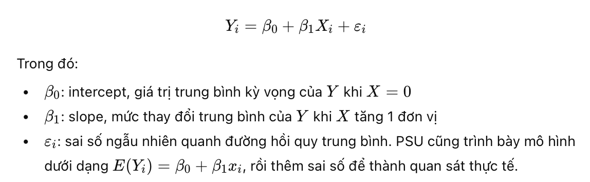
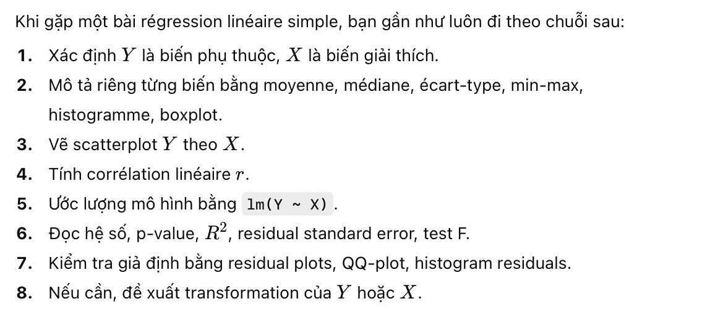
Différence entre corrélation et régression
Corrélation đo cường độ và chiều của liên hệ tuyến tính, đối xứng giữa X và Y.
Régression đặt hướng phân tích rõ ràng: dùng X để giải thích hoặc dự đoán Y.
Corrélation không cho phương trình dự đoán; régression thì có. Đây cũng là lý do “không được dừng ở r” trong bài thi.
Ước lượng moindres carrés ordinaires
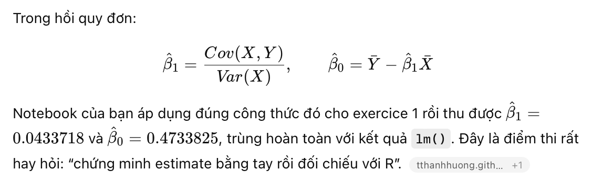
Ý nghĩa các chỉ số
trong summary(lm())
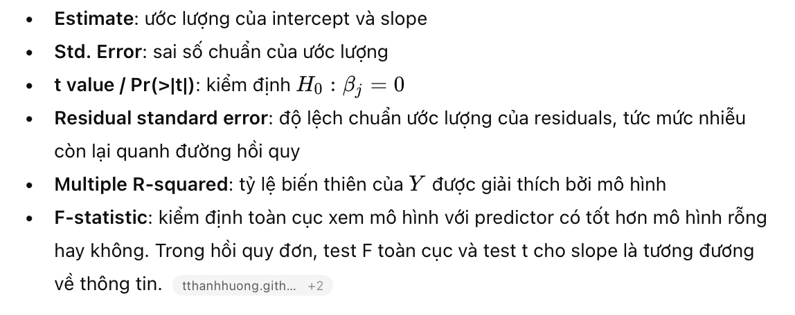
Giả định của hồi quy tuyến tính đơn
Linearité: trung bình của Y thay đổi tuyến tính theo X
Independence: sai số độc lập
Normality: sai số phân phối gần chuẩn
Equal variance: phương sai sai số không đổi, tức homoscédasticité.
Kiểm tra giả định như thế nào?
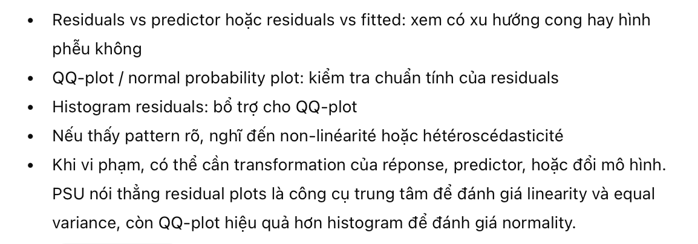
Quan hệ giữa régression và ANOVA
Trong notebook, exercice 3 cho thấy mô
hình lm(Pression_arterielle ~ Traitement) với biến định
tính cho ra cùng F-statistic = 1426 như ANOVA cổ điển.
Tức là ANOVA một yếu tố thực ra là một trường hợp đặc biệt của mô hình
tuyến tính, chỉ khác cách mã hóa biến giải thích. Tổng bình phương vẫn
phân rã thành:
Exercice 1 - Exemple du cours
Dans le cadre d’une étude de santé publique, nous cherchons à évaluer le lien qui pourrait exister entre la proportion de lipides contenue dans l’alimentation et le taux de cholestérol chez les adultes âgés de 45 à 65 ans.
Nous disposons pour cela d’un échantillon de 250 observations pour lesquelles nous disposons des infor- mations suivantes :
— Le taux de cholestérol en g/L (Y ) ; — La proportion moyenne de lipides (en pourcentage) contenue dans l’alimentation évaluée sur 1 mois (X). L’objectif de l’étude est de quantifier l’effet de la quantité de lipides sur le taux de choles- térol.
Importez le jeu de données data_reg_lineaire_simple.csv dans R. Puis mettez en forme les données si nécessaire.
## 1. Importation du jeu de données et mise en forme setwd("/Users/thanhhuong/R/Data_Analysis") exercice1 <- read.csv(file = "/Volumes/ORICO/Modèle Linaire/TD régression linéaire simple-20260121/data_reg_lineaire_simple.csv", sep = ",", dec = ".", header = TRUE) str(exercice1)'data.frame': 250 obs. of 3 variables: $ X.1: int 1 2 3 4 5 6 7 8 9 10 ... $ X : num 30.9 39.2 41.9 36 43.9 ... $ Y : num 2.18 2.36 2.19 1.69 2.63 ...exercice1 <- exercice1[,c(2,3)] # Retrait de la première colonne # exercice1 <- exercice1[,c(-1)] # Méthode alternative str(exercice1)'data.frame': 250 obs. of 2 variables: $ X: num 30.9 39.2 41.9 36 43.9 ... $ Y: num 2.18 2.36 2.19 1.69 2.63 ...Effectuez des statistiques descriptives de chacune des variables. Que pouvez-vous dire ?
## 2. Statistiques descriptives #- Proportion de lipides dans l'alimentation summary(exercice1$X)Min. 1st Qu. Median Mean 3rd Qu. Max. 13.20 28.31 34.95 34.84 40.86 64.68var(exercice1$X)[1] 92.76741sd(exercice1$X)[1] 9.631584boxplot(exercice1$X, ylab = "Proportion de lipides dans l'alimentation (%)", main = "Distribution de la proportion de lipides dans l'alimentation")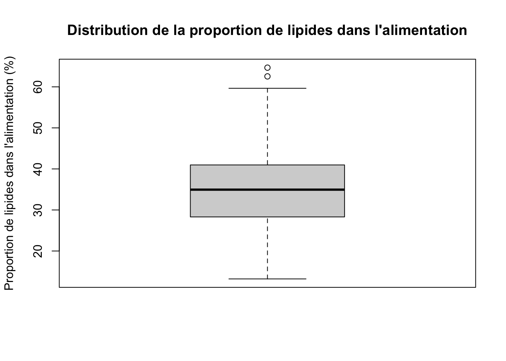
Version Author Date ef88e31 Huong PHAM 2026-03-08 hist(exercice1$X, xlab = "Proportion de lipides (%)", main = "Distribution de la proportion de lipides dans l'alimentation ")
Version Author Date ef88e31 Huong PHAM 2026-03-08 Interprétation des statistiques descriptives
FR : L’échantillon comprend 250 sujets. La proportion de lipides dans l’alimentation varie de 13.20% à 64.68%, avec une moyenne de 34.84% et un écart-type de 9.63. Le cholestérol varie de 0.652 à 3.349 g/L, avec une moyenne de 1.984 g/L et un écart-type de 0.511. Les deux variables présentent donc une variabilité suffisante pour étudier leur relation.
VN : Mẫu có 250 người. Tỷ lệ lipid trong khẩu phần dao động từ 13.20% đến 64.68%, trung bình 34.84%, SD 9.63. Cholestérol dao động từ 0.652 đến 3.349 g/L, trung bình 1.984 g/L, SD 0.511. Hai biến có độ phân tán đủ lớn để khảo sát mối liên hệ tuyến tính.
#- Taux de cholesterol summary(exercice1$Y)Min. 1st Qu. Median Mean 3rd Qu. Max. 0.652 1.680 1.983 1.984 2.340 3.349var(exercice1$Y)[1] 0.2609864sd(exercice1$Y)[1] 0.5108682boxplot(exercice1$Y, ylab = "Taux de cholesterol (g/L)", main = "Distribution du taux de cholestérol")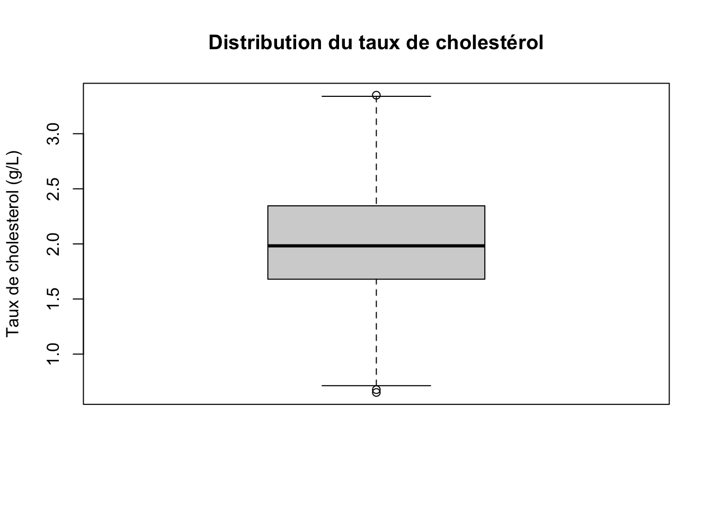
Version Author Date ef88e31 Huong PHAM 2026-03-08 hist(exercice1$Y, xlab = "Taux de cholestérol (g/L)", main = "Distribution du taux de cholesterol")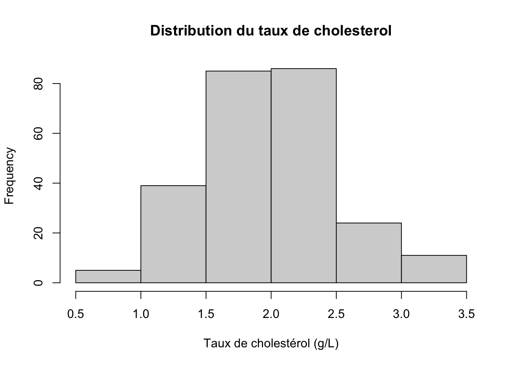
Représentez graphiquement la relation qu’il existe entre le taux de cholesterol et la proportion moyenne de lipides contenue dans l’alimentation des 250 personnes constituant l’échantillon. Quel graphique avez-vous utilisé ? Pourquoi ? Que constatez-vous ? Calculez le coefficient de corrélation linéaire.
## 3. Relation entre X et Y plot(exercice1$Y ~ exercice1$X, xlab = "Pourcentage de lipides dans l'alimentation", ylab = "Taux de cholesterol")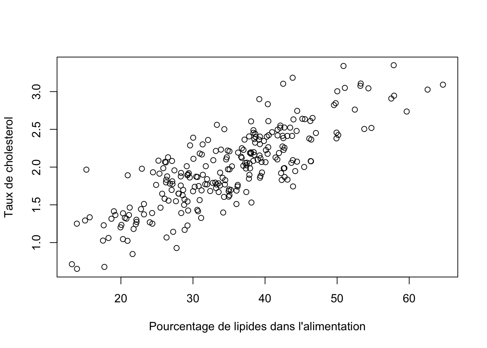
cor(x = exercice1$X, y = exercice1$Y)[1] 0.8177043Interprétation du lien entre X et Y
FR : Le nuage de points est adapté car il s’agit de deux variables quantitatives. Le coefficient de corrélation est r=0.8177r=0.8177, ce qui indique une forte corrélation linéaire positive: plus la proportion de lipides augmente, plus le cholestérol tend à augmenter.
VN : Dùng scatterplot là đúng vì đây là hai biến định lượng. Hệ số tương quan r=0.8177r=0.8177 cho thấy tương quan tuyến tính dương mạnh: tỷ lệ lipid ăn vào càng cao thì cholestérol càng có xu hướng cao.
Pourquoi un modèle linéaire simple est la méthode statistique appropriée pour analyser l’effet de la proportion moyenne de lipides dans l’alimentation sur le taux de cholestérol ? Ecrivez l’équation du modèle.
Calculer la moyenne de X, de Y , la variance de X et la covariance entre X et Y à l’aide du logiciel R, puis calculer à la main la valeur des estimateurs βˆ0 et βˆ1 que l’on obtient avec la méthode des moindres carrés ordinaires.
## 5. Moyennes de X et Y, variance de X et covariance entre X et Y meanX <- mean(exercice1$X) meanX[1] 34.83702meanY <- mean(exercice1$Y) meanY[1] 1.984327varX <- var(exercice1$X) varX[1] 92.76741covXY <- cov(x = exercice1$X, y = exercice1$Y) covXY[1] 4.02349### Estimateur des moindres carrés beta1 <- covXY/varX beta1[1] 0.0433718beta0 <- meanY - beta1*meanX beta0[1] 0.4733825Estimez le modèle avec R. Que constatez-vous ?
## 6. Estimation du modèle avec R modele1 <- lm(formula = Y ~ X, data = exercice1) summary(modele1)Call: lm(formula = Y ~ X, data = exercice1) Residuals: Min 1Q Median 3Q Max -0.74792 -0.19640 -0.02011 0.19212 0.83302 Coefficients: Estimate Std. Error t value Pr(>|t|) (Intercept) 0.473382 0.070066 6.756 1e-10 *** X 0.043372 0.001939 22.370 <2e-16 *** --- Signif. codes: 0 '***' 0.001 '**' 0.01 '*' 0.05 '.' 0.1 ' ' 1 Residual standard error: 0.2947 on 248 degrees of freedom Multiple R-squared: 0.6686, Adjusted R-squared: 0.6673 F-statistic: 500.4 on 1 and 248 DF, p-value: < 2.2e-16# - Extraction des paramètres du modèle coef(modele1)(Intercept) X 0.4733825 0.0433718coef(modele1)[1] # Estimation de beta0(Intercept) 0.4733825coef(modele1)[2] # Estimation de beta1X 0.0433718# - Extraction des résidus d'un modèle resid(modele1)1 2 3 4 5 0.3645139435 0.1910017913 -0.1059847577 -0.3480410097 0.2523969297 6 7 8 9 10 0.0541603689 -0.0191796579 -0.1142030421 -0.2804264563 0.3893486358 11 12 13 14 15 0.2121737360 0.0646217659 -0.0718102706 0.0696911868 0.0802860942 16 17 18 19 20 -0.0378214319 0.8330188834 -0.3899922253 0.0582083671 -0.1098080750 21 22 23 24 25 0.6087892648 0.5302368163 0.0129158850 0.3015965796 0.3607451260 26 27 28 29 30 -0.0917683357 0.3612595141 -0.2596714694 -0.2832897307 0.1268493522 31 32 33 34 35 0.1461860376 0.1853582901 -0.0687947901 -0.0475545001 -0.0626936846 36 37 38 39 40 0.2356714052 0.5050954937 -0.1196798149 0.2071290081 0.3430814626 41 42 43 44 45 0.2504030484 0.1944006517 0.1493366761 0.0722339202 0.1755445009 46 47 48 49 50 -0.3050815622 0.0680599606 0.4679821813 -0.1237702197 -0.1813073867 51 52 53 54 55 0.7866412667 0.1752817499 -0.2574610319 -0.3297019358 0.7261533687 56 57 58 59 60 -0.3673612513 0.1072050432 0.1674741681 -0.3804216675 -0.4566966558 61 62 63 64 65 0.3393630706 -0.3573736699 -0.3180165235 0.2790294956 -0.5627404467 66 67 68 69 70 -0.0341234249 -0.1461258139 -0.1818422569 -0.0081458710 0.2495656296 71 72 73 74 75 -0.0185080902 -0.2213559745 -0.1880327860 -0.3074930675 0.1524036849 76 77 78 79 80 0.2149150244 0.5390090629 0.2189979447 0.1247071653 -0.0403651119 81 82 83 84 85 0.3669511388 -0.1910680092 -0.0632157749 0.1517162693 0.4325108066 86 87 88 89 90 0.0576333212 -0.3383577759 -0.3244031764 0.4510709818 -0.0662728392 91 92 93 94 95 -0.0142682586 -0.0568736475 0.0419512288 -0.3104201273 0.6591412580 96 97 98 99 100 -0.5478007090 -0.5127094911 0.1444468629 0.2112562288 -0.3671976041 101 102 103 104 105 -0.4426834212 -0.1342658973 -0.0949278630 -0.2974758647 0.2133193434 106 107 108 109 110 -0.1170149357 0.1750077421 -0.0402077798 0.0701962024 -0.3127636825 111 112 113 114 115 0.0182298079 -0.4079105779 0.2197100485 -0.4786556966 -0.0247714002 116 117 118 119 120 -0.0951097363 -0.0184151542 0.6135683923 -0.1599509875 0.3325672623 121 122 123 124 125 -0.1970500809 0.0716349557 -0.0210492197 -0.1425246422 -0.2873059601 126 127 128 129 130 -0.0960403495 -0.1346375388 -0.1440860053 -0.7479239927 -0.1506615934 131 132 133 134 135 -0.1956057803 0.0510739999 0.3805787687 0.1866191922 -0.1966587091 136 137 138 139 140 -0.0891785431 0.0552185617 0.4936250159 -0.0117973505 0.0573046403 141 142 143 144 145 -0.0389192526 0.1820201085 0.0701329572 0.2936441394 0.0788416009 146 147 148 149 150 -0.0373175917 -0.3071786752 0.0545198832 -0.2614881281 -0.1463585084 151 152 153 154 155 0.1705094229 -0.0548453031 -0.1060847082 0.2947064569 -0.2051354742 156 157 158 159 160 -0.4970710978 -0.3322114726 0.2936898219 -0.3205767309 0.3227391287 161 162 163 164 165 0.5185558151 0.3403261930 0.1454954881 -0.1417137760 0.6412174307 166 167 168 169 170 0.0318200753 0.0116036771 -0.0752140741 -0.4035621113 0.2274471263 171 172 173 174 175 -0.5560080031 -0.4422480815 -0.2795070872 -0.1215091719 0.2579855111 176 177 178 179 180 -0.2066895413 -0.0594064583 -0.0654992858 0.8091345493 -0.0231549913 181 182 183 184 185 0.2219285308 0.0345036676 -0.2238240806 -0.3563624969 -0.3850435298 186 187 188 189 190 0.1359222910 -0.2173760028 0.1637566230 -0.0602696716 0.1565262733 191 192 193 194 195 0.1924927041 -0.5638602689 -0.0414070102 -0.6330597185 -0.5254981137 196 197 198 199 200 -0.5092819370 -0.3284181153 -0.0594598825 0.1591821970 0.4816666421 201 202 203 204 205 -0.4245855680 0.0319597098 -0.3007182835 -0.1113367062 -0.1807195812 206 207 208 209 210 0.3973715690 0.2267608179 0.1985080994 -0.0862455610 -0.1612332265 211 212 213 214 215 0.0657164130 -0.1366688153 0.1008236479 -0.3375662669 -0.0464398556 216 217 218 219 220 0.0005246322 -0.2518353422 0.1996317104 -0.5154595335 0.1603333839 221 222 223 224 225 0.5114148161 -0.1373965315 -0.4257600789 0.1614498389 -0.0248512610 226 227 228 229 230 -0.5583607285 0.1851578817 0.1810205842 0.5098026911 -0.2365828872 231 232 233 234 235 0.2913884775 0.2125496134 -0.1319403444 0.1300271390 0.4627354352 236 237 238 239 240 -0.0723162689 0.3158376761 -0.2638210366 -0.3000844003 0.0358479029 241 242 243 244 245 0.2130580458 -0.2459861634 -0.1030267269 0.1161053902 0.3505936877 246 247 248 249 250 -0.1870683693 0.2889852885 0.2746362282 -0.5954346919 0.1279181801summary(resid(modele1))Min. 1st Qu. Median Mean 3rd Qu. Max. -0.74792 -0.19640 -0.02011 0.00000 0.19212 0.83302Vérifiez les hypothèses du modèle. Que peut-on conclure ?
## 7. Vérification des hypothèses du modèle residus1 <- resid(modele1) ### Linéarité de la fonction de régression : Résidus en fonction de la variable explicative plot(residus1 ~ exercice1$X, xlab = "Proportion moyenne de lipides dans l'alimentation (%)", ylab = "Résidus")
### Normalité des résidus # Deux façons possibles : qqnorm(residus1)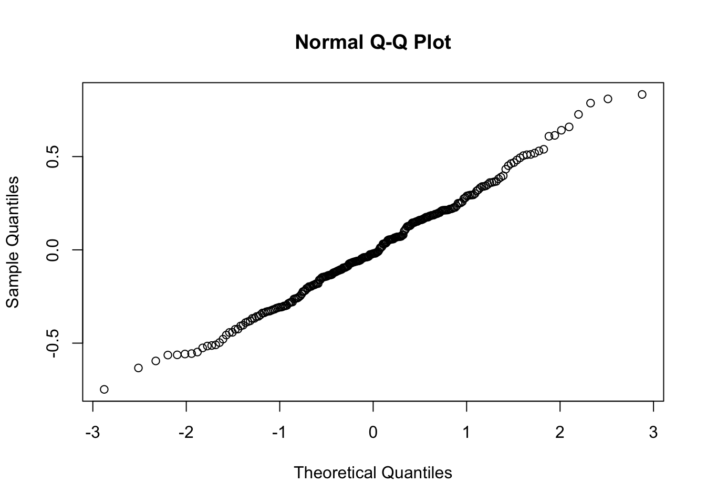
library("car")Warning: package 'car' was built under R version 4.4.3Loading required package: carDataWarning: package 'carData' was built under R version 4.4.3qqPlot(residus1)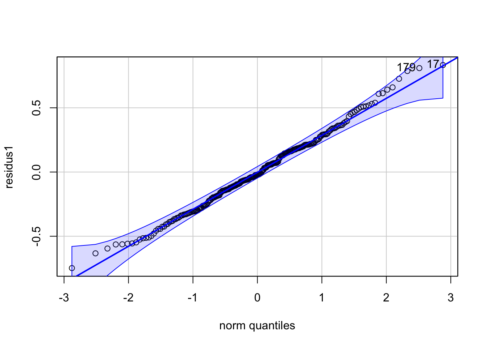
[1] 17 179hist(residus1)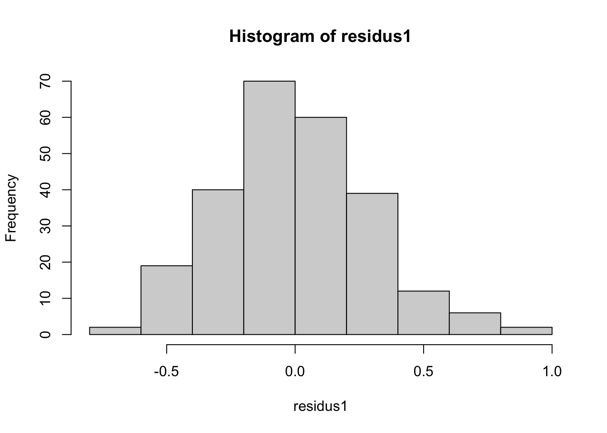
### Homoscedasticité # Deux façons possibles : plot(residus1 ~ exercice1$X, xlab = "Proportion moyenne de lipides dans l'alimentation (%)", ylab = "Résidus")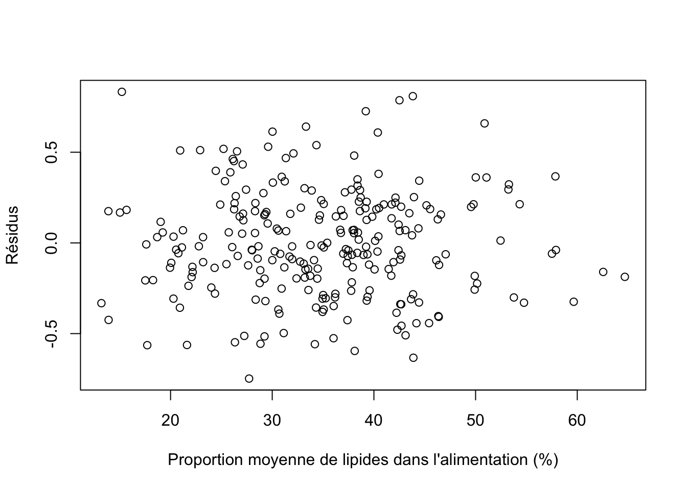
# - Valeurs prédites : exercice1$prediction1 <- predict(modele1, newdata = exercice1) plot(residus1 ~ exercice1$prediction1, xlab = "Taux de cholesterol prédit par le modèle", ylab = "Résidus")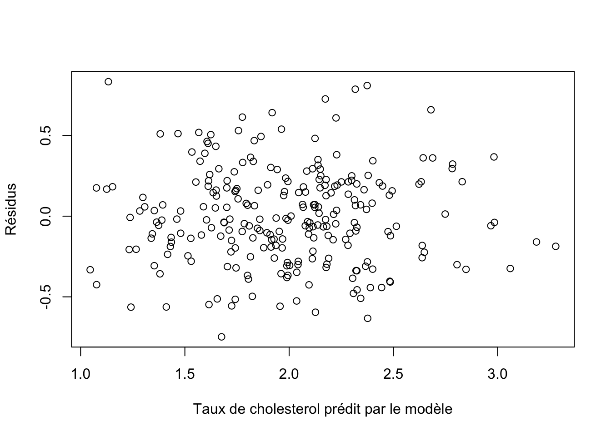
# Alternative : plot(modele1)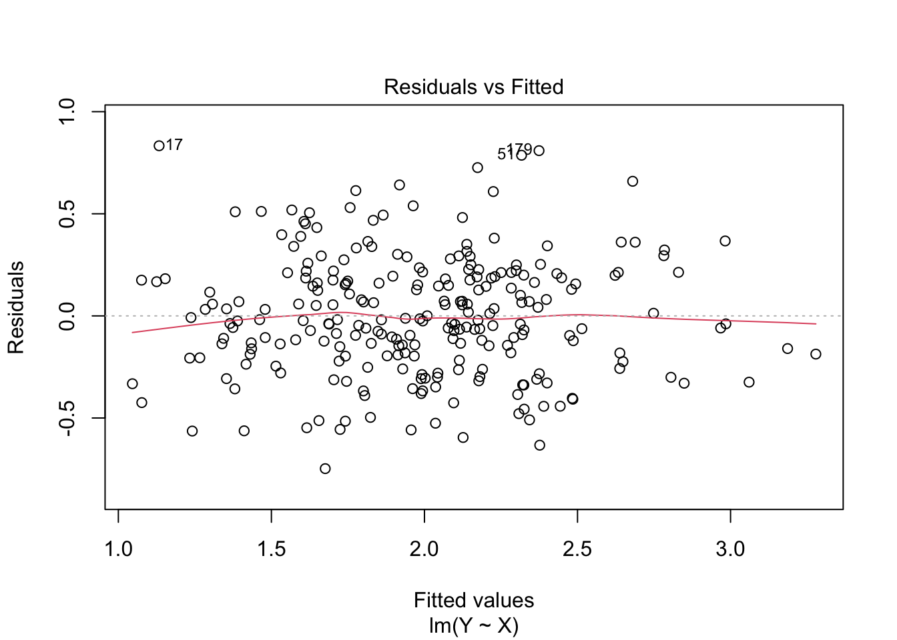
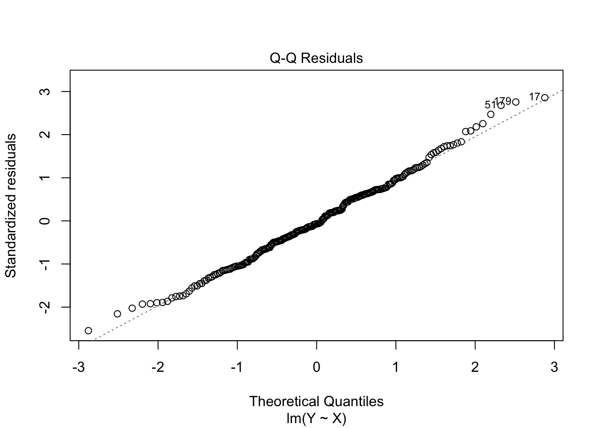
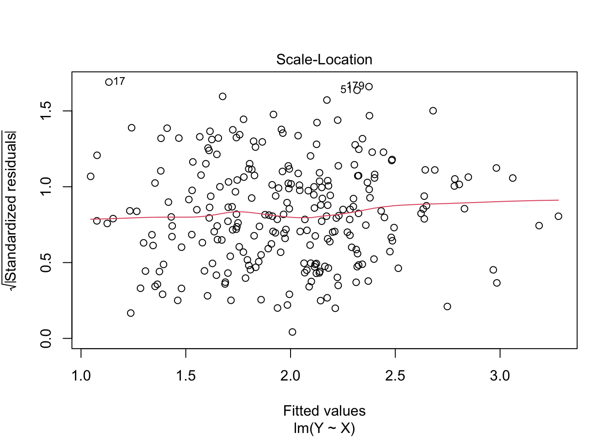
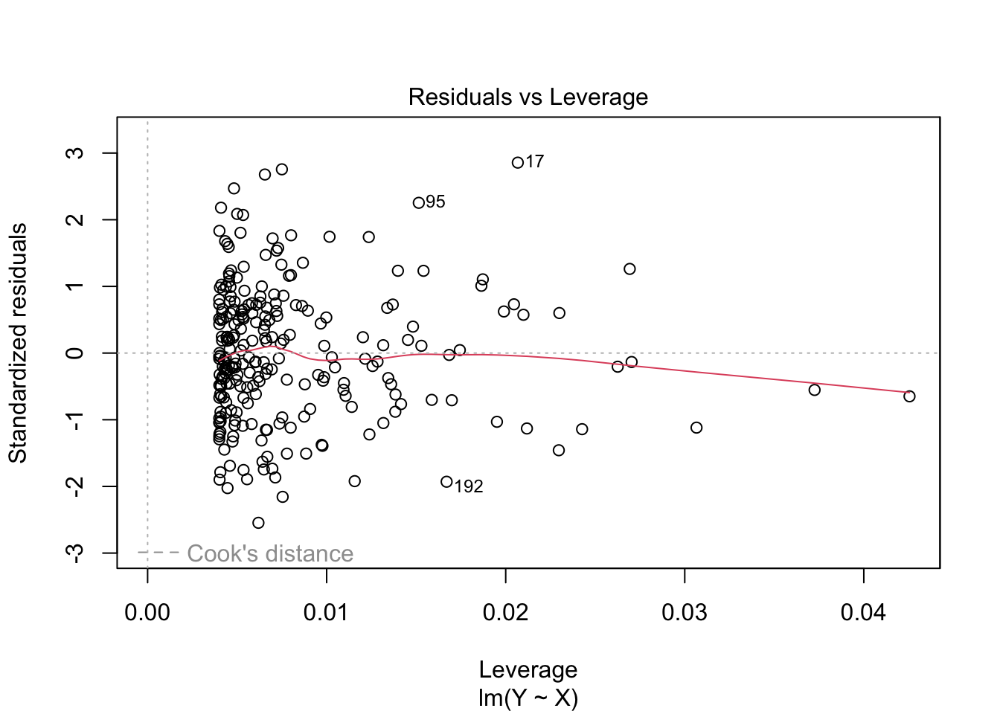
Quelle est la valeur du coefficient de détermination. Que signifie cette valeur ?
## 8. Coefficient de détermination summary(modele1)Call: lm(formula = Y ~ X, data = exercice1) Residuals: Min 1Q Median 3Q Max -0.74792 -0.19640 -0.02011 0.19212 0.83302 Coefficients: Estimate Std. Error t value Pr(>|t|) (Intercept) 0.473382 0.070066 6.756 1e-10 *** X 0.043372 0.001939 22.370 <2e-16 *** --- Signif. codes: 0 '***' 0.001 '**' 0.01 '*' 0.05 '.' 0.1 ' ' 1 Residual standard error: 0.2947 on 248 degrees of freedom Multiple R-squared: 0.6686, Adjusted R-squared: 0.6673 F-statistic: 500.4 on 1 and 248 DF, p-value: < 2.2e-16summary(modele1)$r.squared[1] 0.6686403(cor(exercice1$X, exercice1$Y))^2[1] 0.6686403Interprétation du modèle estimé :
FR : La pente 0.04337 signifie qu’une augmentation d’1 point de pourcentage des lipides alimentaires est associée à une augmentation moyenne de 0.043 g/L du cholestérol. L’ordonnée à l’origine 0.473 correspond au cholestérol théorique attendu pour X=0, mais son interprétation pratique est limitée. Les estimateurs obtenus à la main et avec
lm()coïncident, ce qui valide le calcul par moindres carrés.VN : Hệ số góc 0.04337 nghĩa là cứ tăng 1 điểm phần trăm lipid trong khẩu phần thì cholestérol trung bình tăng khoảng 0.043 g/L. Intercept 0.473 là giá trị dự đoán khi X=0, chủ yếu có ý nghĩa toán học hơn là thực hành. Kết quả tính tay và kết quả từ
lm()trùng nhau, chứng tỏ cách tính moindres carrés là đúng.Le modèle est-il significatif ? La proportion de lipides dans l’alimentation a-t-il un effet sginficatif sur le taux de cholestérol ? Comparez ces deux résultats. Que constatez-vous ?
## 9. Significativité globale du modèle et effet de la proportion de lipides summary(modele1)Call: lm(formula = Y ~ X, data = exercice1) Residuals: Min 1Q Median 3Q Max -0.74792 -0.19640 -0.02011 0.19212 0.83302 Coefficients: Estimate Std. Error t value Pr(>|t|) (Intercept) 0.473382 0.070066 6.756 1e-10 *** X 0.043372 0.001939 22.370 <2e-16 *** --- Signif. codes: 0 '***' 0.001 '**' 0.01 '*' 0.05 '.' 0.1 ' ' 1 Residual standard error: 0.2947 on 248 degrees of freedom Multiple R-squared: 0.6686, Adjusted R-squared: 0.6673 F-statistic: 500.4 on 1 and 248 DF, p-value: < 2.2e-16Significativité et qualité du modèle
FR : Le coefficient de pente est hautement significatif (
t = 22.370,p < 2e-16). Le test F global est aussi très significatif (F = 500.4,p < 2.2e-16). On rejette donc H0:β1=0. Le modèle explique 66.86% de la variabilité du cholestérol (R2=0.6686), ce qui est élevé pour une régression simple.VN : Hệ số slope có ý nghĩa thống kê rất mạnh (
t = 22.370,p < 2e-16). Test F toàn cục cũng rất có ý nghĩa (F = 500.4,p < 2.2e-16). Vì vậy bác bỏ H0:β1=0. Mô hình giải thích khoảng 66.86% biến thiên của cholestérol, tức là khá mạnh đối với một hồi quy đơn.Interprétez les résultats du modèle.
Quelle est le taux de cholestérol prédit par le modèle pour une personne ayant une quantité moyenne de lipides dans son alimentation de 25 % ? De 75 % ?
## 11. Prédiction # Deux façons de procéder : pred1 <- coef(modele1)[1] + coef(modele1)[2]*25 pred1(Intercept) 1.557678pred2 <- coef(modele1)[1] + coef(modele1)[2]*75 pred2(Intercept) 3.726268# Ou Xpred <- data.frame(X = c(25, 75)) # Il faut que les données soient sous la forme d'un dataframe predict(modele1, newdata = Xpred)1 2 1.557678 3.726268
Exercice 2 - Etude du volume expiratoire forcé
Une étude a été réalisée auprès de 650 enfants/adolescents âgés entre 4 et 19 ans afin d’étudier le volume expiratoire forcée (VEF), mesuré en litres BTPS, un indice d’activité pulmonaire mesurant le volume d’air expulsé avec force jusqu’au volume résiduel à partir de la capacité pulmonaire totale obte- nue. Cette mesure est obtenue à partir d’une spirométrie forcée.
Outre le VEF et l’âge des enfants (en années), leur taille (en cm) et la pratique d’une activité sportive (1 = Oui/0 = Non) ont été recueillis. Les données se trouve dans le fichier VEF.csv.
Dans le cadre de cette exercice, nous souhaiterions évaluer l’effet de la taille sur le VEF.
Importez le jeu de données dans R. Puis mettez en forme les données si nécessaire.
## 1. Importation des données et mise en forme exercice2 <- read.csv(file = "/Volumes/ORICO/Modèle Linaire/TD régression linéaire simple-20260121/VEF.csv", sep = ",", dec = ".", header = TRUE) str(exercice2)'data.frame': 650 obs. of 5 variables: $ X : int 1 2 3 4 5 6 7 8 9 10 ... $ age : int 7 6 6 15 11 19 9 17 12 18 ... $ taille : int 125 125 122 165 144 191 135 177 149 183 ... $ activite: int 1 0 1 0 1 1 1 1 1 1 ... $ VEF : num 2.74 2.1 2.29 4.09 2.93 ...exercice2 <- exercice2[,-1] exercice2$activite <- factor(exercice2$activite, levels = c(0,1), labels = c("Non", "Oui")) str(exercice2)'data.frame': 650 obs. of 4 variables: $ age : int 7 6 6 15 11 19 9 17 12 18 ... $ taille : int 125 125 122 165 144 191 135 177 149 183 ... $ activite: Factor w/ 2 levels "Non","Oui": 2 1 2 1 2 2 2 2 2 2 ... $ VEF : num 2.74 2.1 2.29 4.09 2.93 ...Effectuez des statistiques descriptives de la taille et du VEF. Que pouvez-vous dire ?
## 2. Statistiques descriptives # - VEF summary(exercice2$VEF)Min. 1st Qu. Median Mean 3rd Qu. Max. 1.788 2.516 3.273 3.486 4.248 6.822sd(exercice2$VEF)[1] 1.114224hist(exercice2$VEF, xlab = "VEF", main = "Distribution du VEF")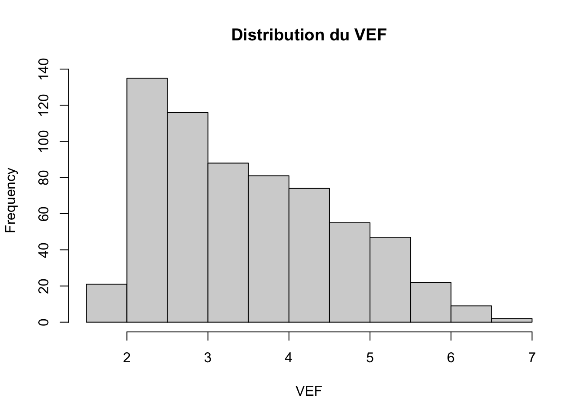
boxplot(exercice2$VEF, ylab = "VEF", main = "Distribution du VEF")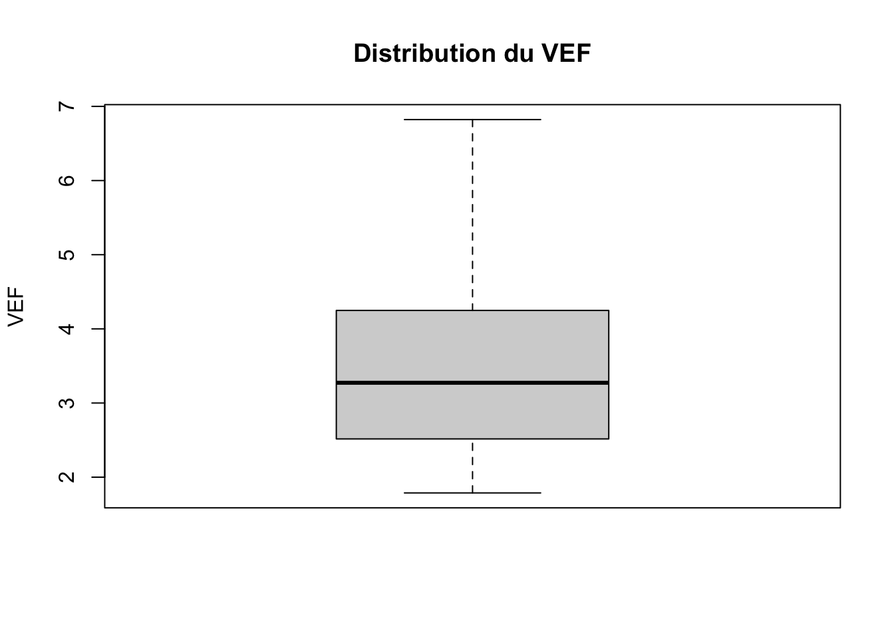
Version Author Date ef88e31 Huong PHAM 2026-03-08 #- Taille summary(exercice2$taille)Min. 1st Qu. Median Mean 3rd Qu. Max. 112 128 146 149 170 191sd(exercice2$taille)[1] 23.00886hist(exercice2$taille, xlab = "taille (cm)", main = "Distribution de la taille")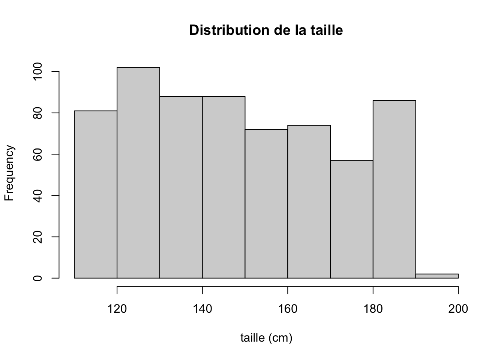
Version Author Date ef88e31 Huong PHAM 2026-03-08 boxplot(exercice2$taille, ylab = "taille (cm)", main = "Distribution de la taille")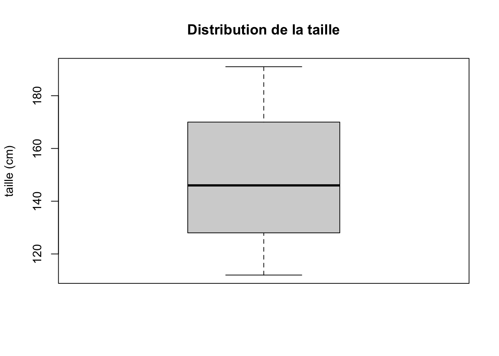
Version Author Date ef88e31 Huong PHAM 2026-03-08 Représentez graphiquement la relation entre la taille et le VEF à partir des données recueillies et calculez le coefficient de corrélation linéaire. Que constatez-vous ?
## 3. Représentation graphique relation VEF vs. taille et coefficient de corrélation plot(exercice2$VEF ~ exercice2$taille, xlab = "Taille (cm)", ylab = "Volume expiratoire forcé")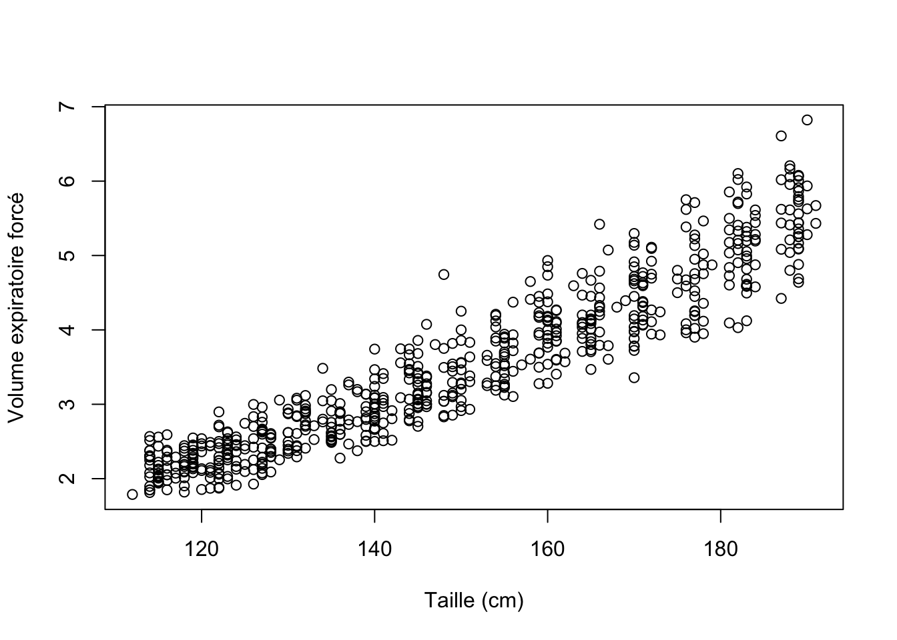
Version Author Date ef88e31 Huong PHAM 2026-03-08 cor(exercice2$taille, exercice2$VEF)[1] 0.9394317Corrélation
FR : La corrélation entre la taille et le VEF est très forte (r=0.9394r=0.9394), donc le VEF augmente nettement avec la taille.
VN : Tương quan giữa chiều cao và VEF rất mạnh (r=0.9394r=0.9394), nghĩa là chiều cao tăng thì VEF tăng rất rõ
Ecrivez l’équation du modèle, puis estimez-le à l’aide du logiciel R.
## 4. Estimation du modèle avec R modele2 <- lm(VEF ~ taille, data = exercice2) summary(modele2)Call: lm(formula = VEF ~ taille, data = exercice2) Residuals: Min 1Q Median 3Q Max -1.08601 -0.26418 -0.00611 0.22883 1.46914 Coefficients: Estimate Std. Error t value Pr(>|t|) (Intercept) -3.290356 0.098269 -33.48 <2e-16 *** taille 0.045493 0.000652 69.77 <2e-16 *** --- Signif. codes: 0 '***' 0.001 '**' 0.01 '*' 0.05 '.' 0.1 ' ' 1 Residual standard error: 0.3822 on 648 degrees of freedom Multiple R-squared: 0.8825, Adjusted R-squared: 0.8824 F-statistic: 4868 on 1 and 648 DF, p-value: < 2.2e-16Modèle brut :
Mô hình đầu tiên là:
FR : Une augmentation d’1 cm de taille est associée à une augmentation moyenne de 0.0455 unité de VEF. La pente est hautement significative (
t = 69.77,p < 2e-16) et le modèle explique 88.25% de la variabilité du VEF. C’est un excellent ajustement sur le plan quantitatif.VN : Cứ tăng 1 cm chiều cao thì VEF trung bình tăng khoảng 0.0455 đơn vị. Hệ số slope rất có ý nghĩa thống kê (
t = 69.77,p < 2e-16) và mô hình giải thích 88.25% biến thiên của VEF. Xét riêng về mức độ phù hợp số học thì mô hình rất tốt.Vérifiez les hypothèses du modèle. Que peut-on conclure ? Quelle transformation pourrait-on faire pour que le modèle soit valide ?
## 5. Vérification des hypothèses du modèle residus2 <- resid(modele2) ### Linéarité de la fonction de régression : Résidus en fonction de la variable explicative plot(residus2 ~ exercice2$taille, xlab = "Taille (cm)", ylab = "Résidus")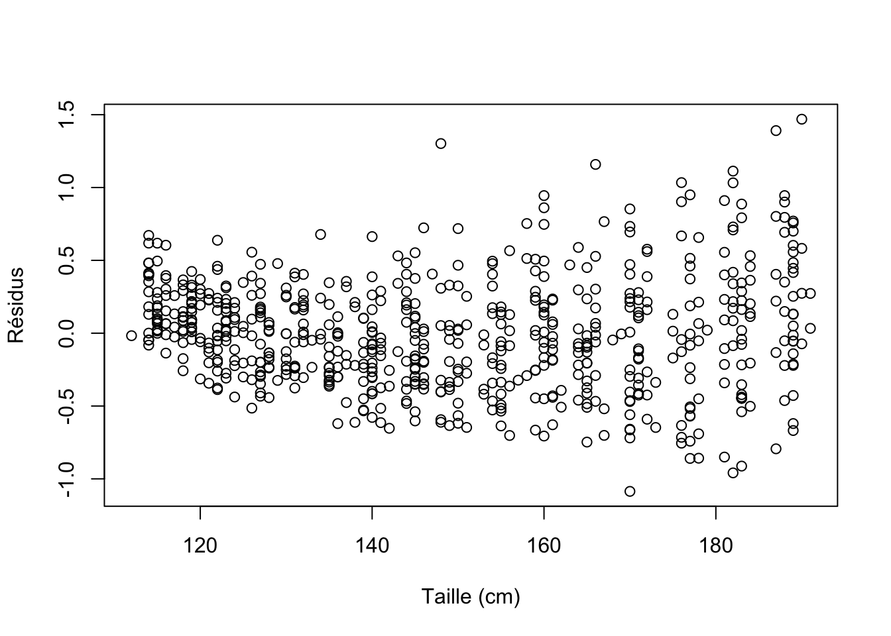
### Normalité des résidus qqPlot(residus2)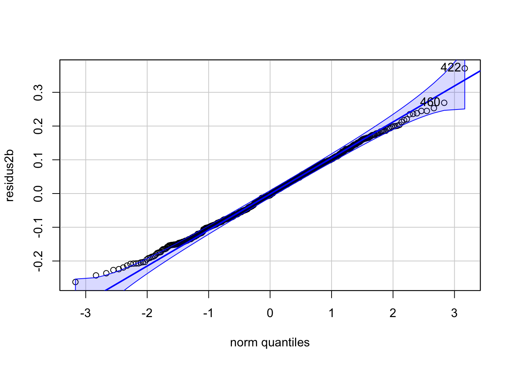
[1] 111 262hist(residus2)
### Homoscedasticité # Deux façons possibles : plot(residus2 ~ exercice2$taille, xlab = "Taille (cm)", ylab = "Résidus")
# - Valeurs prédites : exercice2$prediction2 <- predict(modele2, newdata = exercice2) plot(residus2 ~ exercice2$prediction2, xlab = "VEF prédit par le modèle", ylab = "Résidus")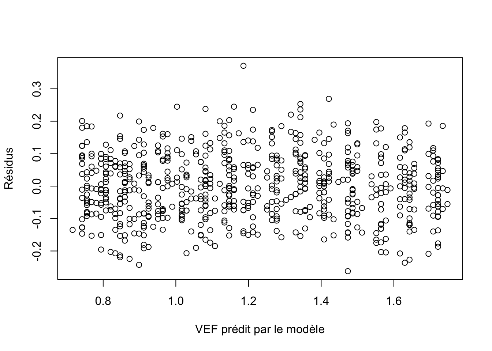
plot(modele2)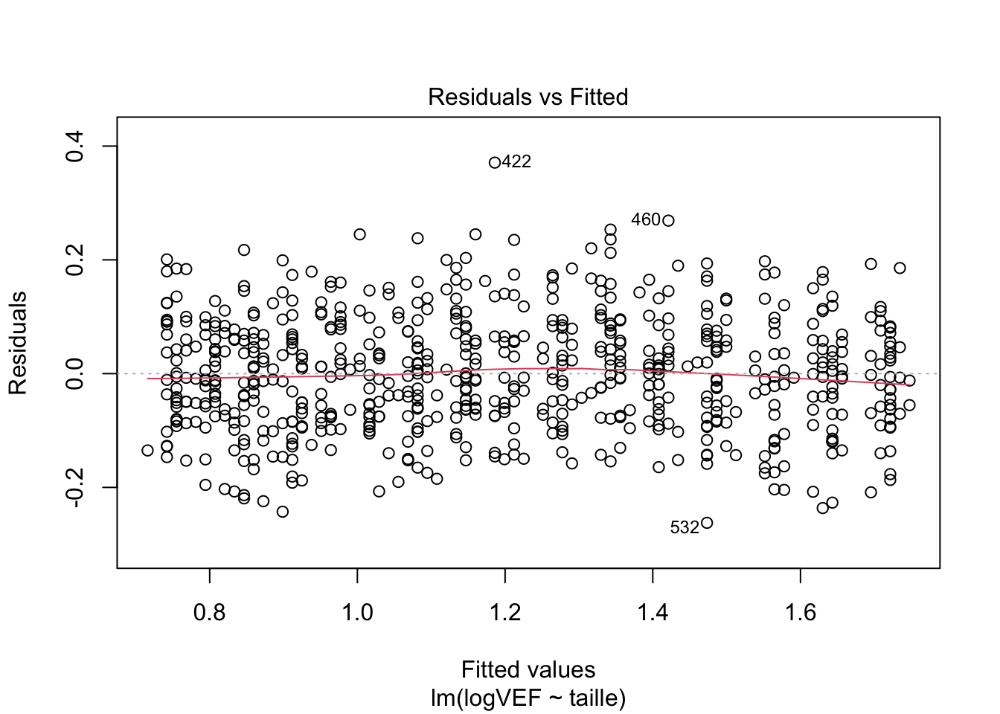


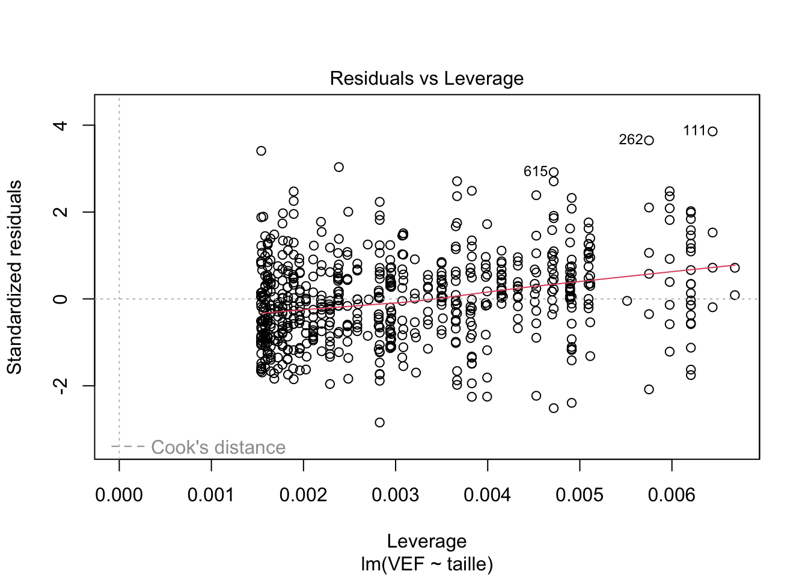
# - Test de transformation hist(exercice2$VEF)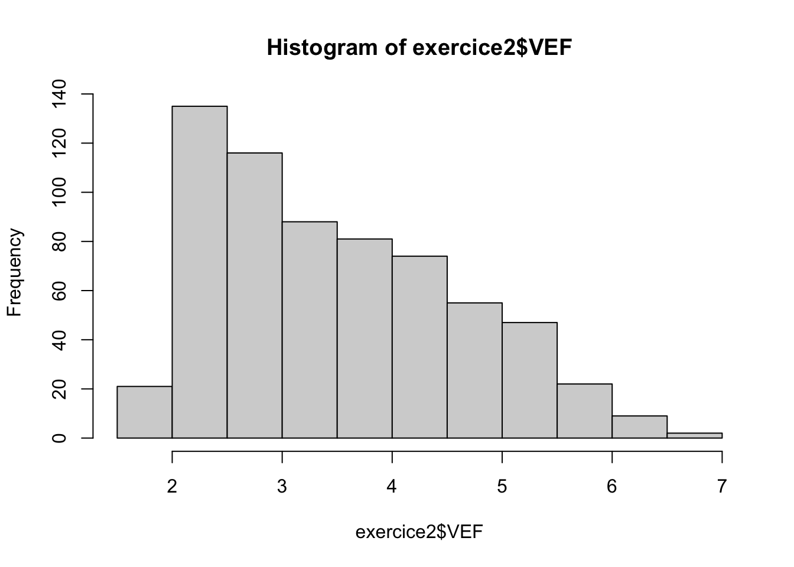
Version Author Date ef88e31 Huong PHAM 2026-03-08 hist(log(exercice2$VEF))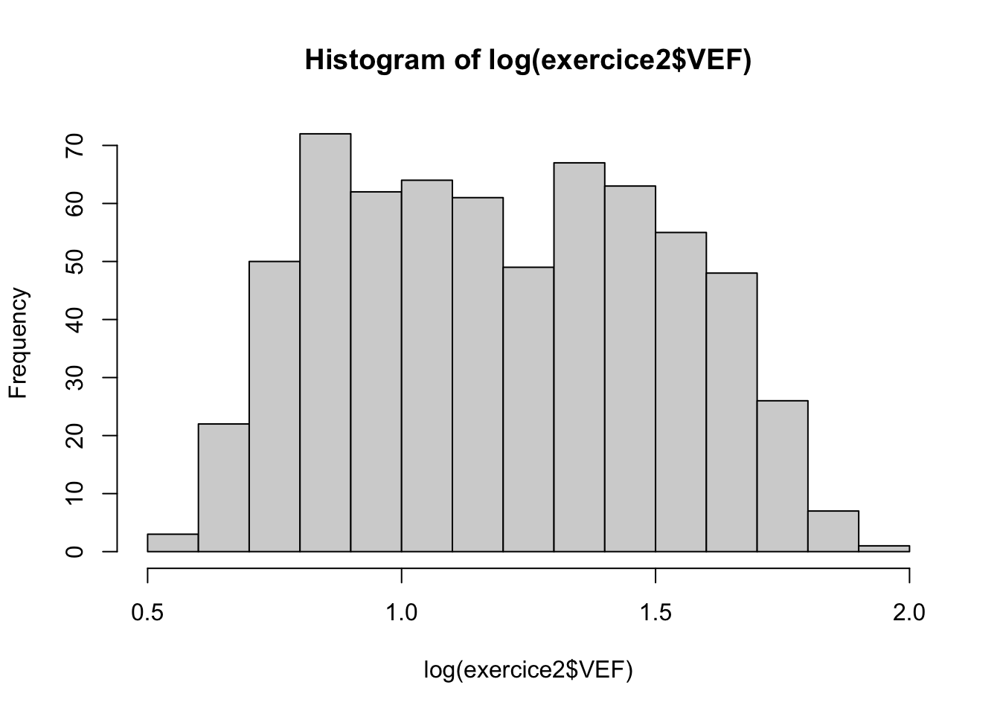
Version Author Date ef88e31 Huong PHAM 2026-03-08 hist((exercice2$VEF)^2)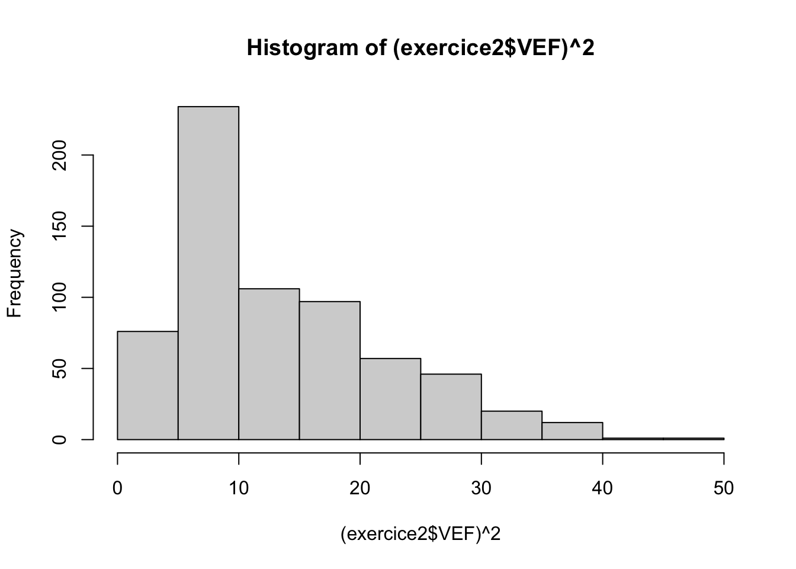
Version Author Date ef88e31 Huong PHAM 2026-03-08 hist(sqrt(exercice2$VEF))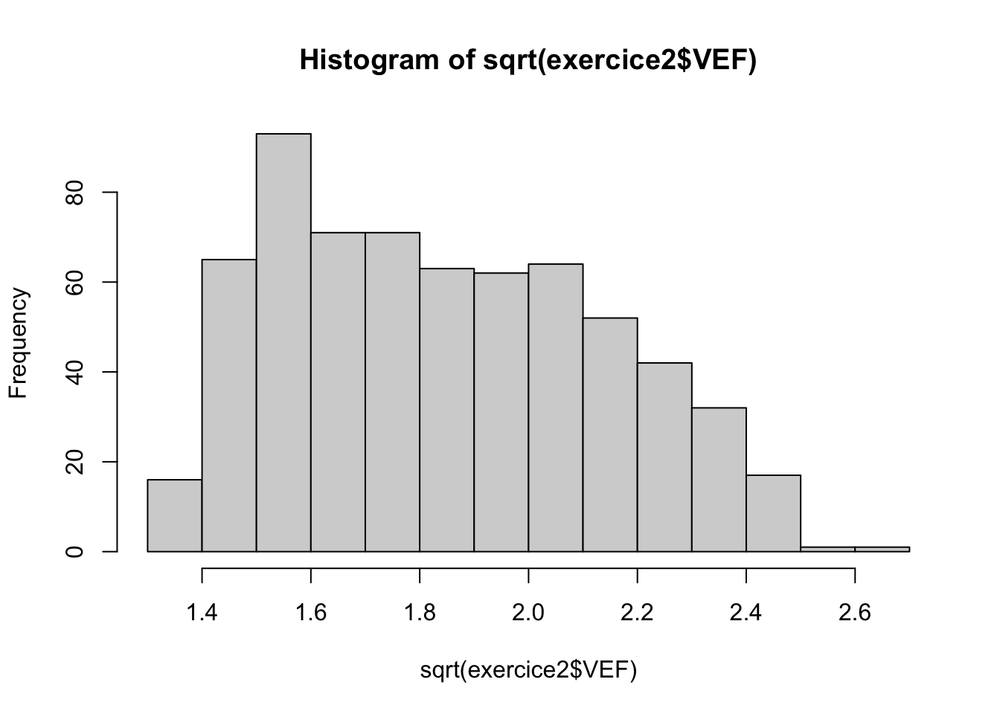
Version Author Date ef88e31 Huong PHAM 2026-03-08 Hypothèses du modèle brut
FR : Le notebook montre une étude des résidus puis propose une transformation logarithmique de la réponse. Cela suggère que, malgré un très bon R2R2, les hypothèses du modèle brut n’étaient pas jugées suffisamment satisfaisantes, probablement en termes de normalité et/ou d’homoscédasticité. Deux observations atypiques potentielles sont signalées par le QQ-plot (111 et 262).
VN : Notebook kiểm tra residuals rồi mới chuyển sang log-transform của biến đáp ứng. Điều đó gợi ý rằng dù R2 rất cao, mô hình thô vẫn chưa thật sự sạch về giả định, nhiều khả năng do normalité hoặc homoscédasticité chưa tốt. QQ-plot còn gợi ý hai quan sát lệch là 111 và 262.
Estimez un modèle dans lequel vous appliquez cette transformation. Vérifiez les hypothèses sous- jacentes.
## 6. Modèle avec transformation # - Transformation log de la variable réponse exercice2$logVEF <- log(exercice2$VEF) # - Estimation du nouveau modèle modele2b <- lm(logVEF ~ taille, data = exercice2) summary(modele2b)Call: lm(formula = logVEF ~ taille, data = exercice2) Residuals: Min 1Q Median 3Q Max -0.26224 -0.07340 -0.00499 0.07062 0.37090 Coefficients: Estimate Std. Error t value Pr(>|t|) (Intercept) -0.7467194 0.0259668 -28.76 <2e-16 *** taille 0.0130596 0.0001723 75.80 <2e-16 *** --- Signif. codes: 0 '***' 0.001 '**' 0.01 '*' 0.05 '.' 0.1 ' ' 1 Residual standard error: 0.101 on 648 degrees of freedom Multiple R-squared: 0.8987, Adjusted R-squared: 0.8985 F-statistic: 5746 on 1 and 648 DF, p-value: < 2.2e-16#- Vérification des hypothèses residus2b <- resid(modele2b) ### Linéarité de la fonction de régression : Résidus en fonction de la variable explicative plot(residus2b ~ exercice2$taille, xlab = "Taille (cm)", ylab = "Résidus")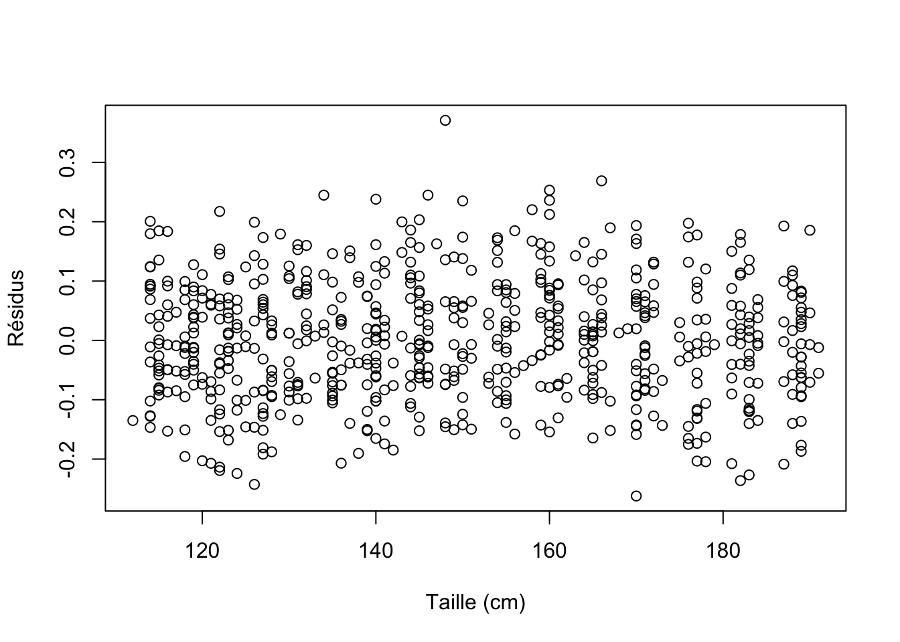
Version Author Date ef88e31 Huong PHAM 2026-03-08 ### Normalité des résidus qqPlot(residus2b)
Version Author Date ef88e31 Huong PHAM 2026-03-08 [1] 422 460hist(residus2b)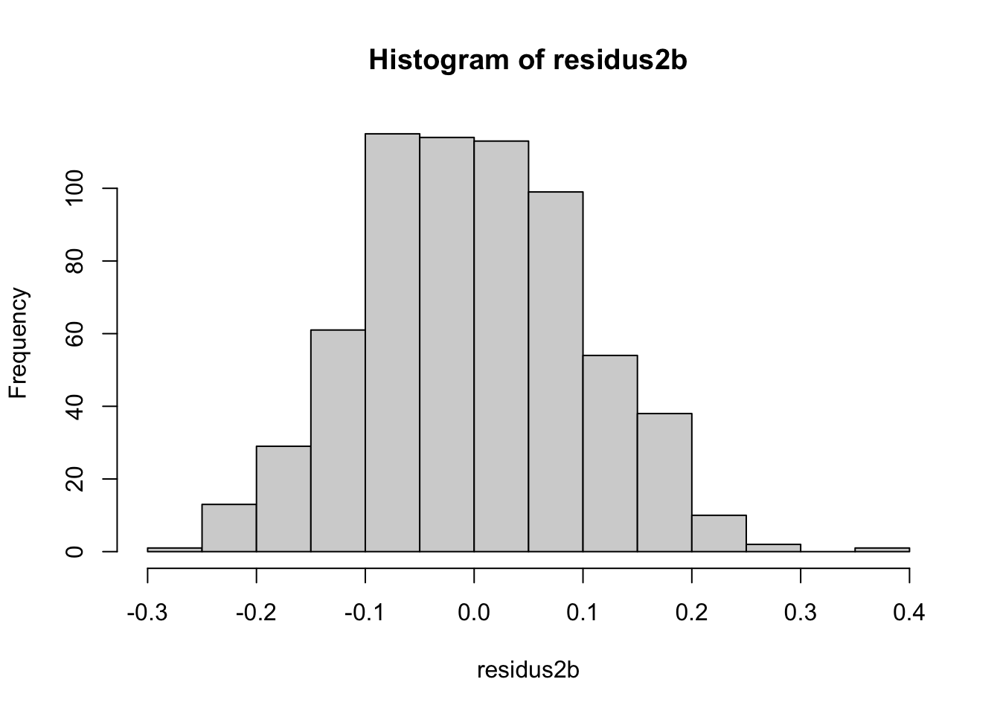
Version Author Date ef88e31 Huong PHAM 2026-03-08 ### Homoscedasticité # Deux façons possibles : plot(residus2b ~ exercice2$taille, xlab = "Taille (cm)", ylab = "Résidus")
Version Author Date ef88e31 Huong PHAM 2026-03-08 # - Valeurs prédites : exercice2$prediction2b <- predict(modele2b, newdata = exercice2) plot(residus2b ~ exercice2$prediction2b, xlab = "VEF prédit par le modèle", ylab = "Résidus")
Version Author Date ef88e31 Huong PHAM 2026-03-08 plot(modele2b)
Version Author Date ef88e31 Huong PHAM 2026-03-08 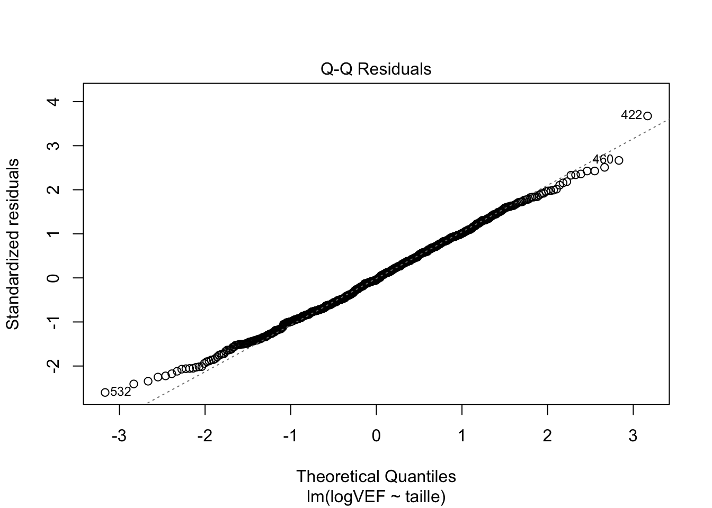
Version Author Date ef88e31 Huong PHAM 2026-03-08 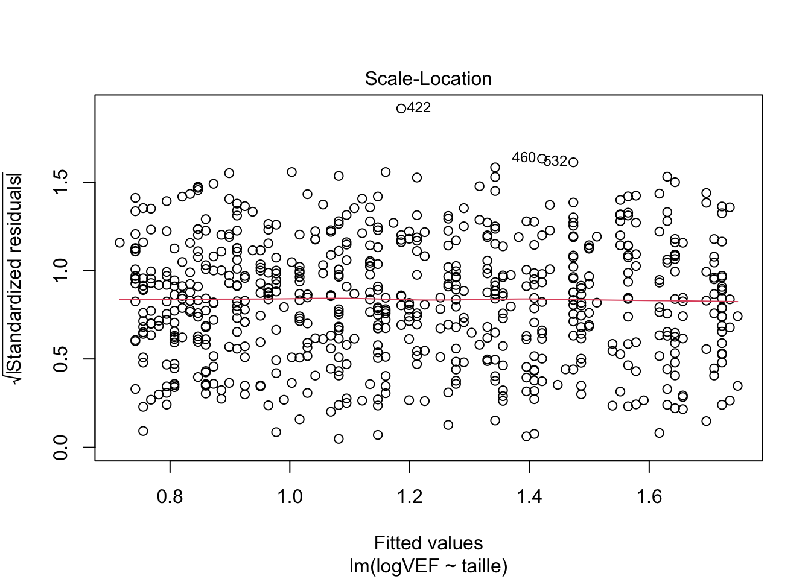
Version Author Date ef88e31 Huong PHAM 2026-03-08 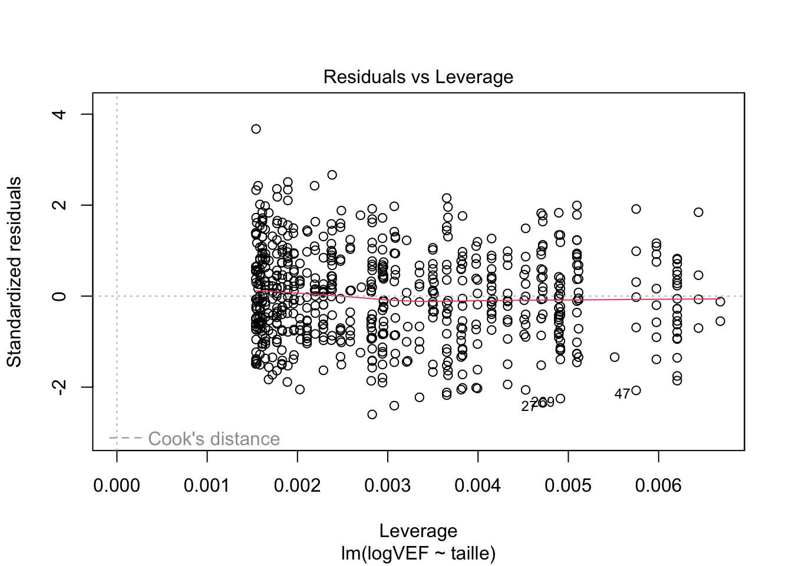
Version Author Date ef88e31 Huong PHAM 2026-03-08 Modèle transformé :
Mô hình sau biến đổi là:
FR : Après transformation logarithmique, la pente reste très significative (
t = 75.80,p < 2e-16) et R2 augmente à 0.8987. Le modèle sur l’échelle logarithmique semble donc mieux adapté.VN : Sau khi log-transform biến đáp ứng, slope vẫn rất có ý nghĩa thống kê (
t = 75.80,p < 2e-16) và R2 tăng lên 0.8987. Vì vậy mô hình trên thang log có vẻ phù hợp hơn mô hình thô.Interprétez les résultats du modèle.
## 7. Résultats du modèle summary(modele2b)Call: lm(formula = logVEF ~ taille, data = exercice2) Residuals: Min 1Q Median 3Q Max -0.26224 -0.07340 -0.00499 0.07062 0.37090 Coefficients: Estimate Std. Error t value Pr(>|t|) (Intercept) -0.7467194 0.0259668 -28.76 <2e-16 *** taille 0.0130596 0.0001723 75.80 <2e-16 *** --- Signif. codes: 0 '***' 0.001 '**' 0.01 '*' 0.05 '.' 0.1 ' ' 1 Residual standard error: 0.101 on 648 degrees of freedom Multiple R-squared: 0.8987, Adjusted R-squared: 0.8985 F-statistic: 5746 on 1 and 648 DF, p-value: < 2.2e-16
Conclusion de l’exercice :
FR : La taille a un effet très important sur le
VEF. Le modèle brut est déjà fort, mais le modèle avec log(VEF)
semble plus valide et plus performant.
VN : Chiều cao ảnh hưởng rất mạnh lên VEF. Mô hình thô
đã mạnh, nhưng mô hình với log(VEF) có vẻ hợp lệ và tốt
hơn.
Exercice 3 - Lien entre régression linéaire et analyse de la variance à un facteur
Reprenons l’exercice 1 du TD 1 : considérons les résultats d’une étude clinique portant sur la com- paraison de l’effet de deux anti-hypertenseurs et d’un placebo sur la pression artérielle. Nous disponsons d’un échantillon de 45 patients choisis au hasard, parmi lesquels 15 patients ont reçu l’anti-hypertenseur A, 15 patients ont reçu l’anti-hypertenseur B et 15 patients ont reçu le placebo. Pour chaque patient nous disposons de la pression artérielle systolique (en mmHg) 3 mois après l’initiation du traitement.
Importez le jeu de données data_aov.csv dans R. Puis mettez en forme les données.
## 1. Importation et mise en forme du jeu de données data_aov <- read.csv("/Volumes/ORICO/Modèle Linaire/TD régression linéaire simple-20260121/data_aov.csv",sep = ",", dec = ".") str(data_aov)'data.frame': 45 obs. of 3 variables: $ X : int 1 2 3 4 5 6 7 8 9 10 ... $ Pression_arterielle: int 119 120 123 120 120 123 121 117 119 119 ... $ Traitement : chr "A" "A" "A" "A" ...data_aov$Traitement <- as.factor(data_aov$Traitement) str(data_aov)'data.frame': 45 obs. of 3 variables: $ X : int 1 2 3 4 5 6 7 8 9 10 ... $ Pression_arterielle: int 119 120 123 120 120 123 121 117 119 119 ... $ Traitement : Factor w/ 3 levels "A","B","Placebo": 1 1 1 1 1 1 1 1 1 1 ...contrasts(data_aov$Traitement)B Placebo A 0 0 B 1 0 Placebo 0 1Réalisez une analyse de la variance à partir de la fonction aov().
## 2. ANOVA I ANOVA1 <- aov(Pression_arterielle ~ Traitement, data = data_aov) summary(ANOVA1)Df Sum Sq Mean Sq F value Pr(>F) Traitement 2 10186 5093 1426 <2e-16 *** Residuals 42 150 4 --- Signif. codes: 0 '***' 0.001 '**' 0.01 '*' 0.05 '.' 0.1 ' ' 1library(tidyverse) # Manipulation et visualisation des donnéesWarning: package 'ggplot2' was built under R version 4.4.3Warning: package 'tibble' was built under R version 4.4.3Warning: package 'tidyr' was built under R version 4.4.3Warning: package 'readr' was built under R version 4.4.3Warning: package 'purrr' was built under R version 4.4.3Warning: package 'dplyr' was built under R version 4.4.3Warning: package 'lubridate' was built under R version 4.4.3── Attaching core tidyverse packages ──────────────────────── tidyverse 2.0.0 ── ✔ dplyr 1.2.0 ✔ readr 2.1.6 ✔ forcats 1.0.1 ✔ stringr 1.6.0 ✔ ggplot2 4.0.2 ✔ tibble 3.3.1 ✔ lubridate 1.9.5 ✔ tidyr 1.3.2 ✔ purrr 1.2.1 ── Conflicts ────────────────────────────────────────── tidyverse_conflicts() ── ✖ dplyr::filter() masks stats::filter() ✖ dplyr::lag() masks stats::lag() ✖ dplyr::recode() masks car::recode() ✖ purrr::some() masks car::some() ℹ Use the conflicted package (<http://conflicted.r-lib.org/>) to force all conflicts to become errorslibrary(rstatix) # Fonctions pour analyses statistiquesAttaching package: 'rstatix' The following object is masked from 'package:stats': filterlibrary(multcomp)Loading required package: mvtnorm Loading required package: survivalWarning: package 'survival' was built under R version 4.4.3Loading required package: TH.dataWarning: package 'TH.data' was built under R version 4.4.3Loading required package: MASS Attaching package: 'MASS' The following object is masked from 'package:rstatix': select The following object is masked from 'package:dplyr': select Attaching package: 'TH.data' The following object is masked from 'package:MASS': geyser# Calcul des différences entre les groupes contr <- rbind("A - B" = c(1, -1, 0), "A - Placebo" = c(1, 0, -1), "B - Placebo" = c(0, 1, -1)) pwc <- glht(ANOVA1, linfct = mcp(Traitement = contr)) summary(pwc)Simultaneous Tests for General Linear Hypotheses Multiple Comparisons of Means: User-defined Contrasts Fit: aov(formula = Pression_arterielle ~ Traitement, data = data_aov) Linear Hypotheses: Estimate Std. Error t value Pr(>|t|) A - B == 0 10.6000 0.6901 15.36 <2e-16 *** A - Placebo == 0 -25.2667 0.6901 -36.62 <2e-16 *** B - Placebo == 0 -35.8667 0.6901 -51.98 <2e-16 *** --- Signif. codes: 0 '***' 0.001 '**' 0.01 '*' 0.05 '.' 0.1 ' ' 1 (Adjusted p values reported -- single-step method)# P-valeurs avec ajustement pour tests multiples pwc_pvalues <- data_aov %>% pairwise_t_test(Pression_arterielle ~ Traitement, p.adjust.method = "BH") pwc_pvalues# A tibble: 3 × 9 .y. group1 group2 n1 n2 p p.signif p.adj p.adj.signif * <chr> <chr> <chr> <int> <int> <dbl> <chr> <dbl> <chr> 1 Pression_ar… A B 15 15 7.70e-19 **** 7.70e-19 **** 2 Pression_ar… A Place… 15 15 1.69e-33 **** 2.53e-33 **** 3 Pression_ar… B Place… 15 15 9.44e-40 **** 2.83e-39 ****Résultat ANOVA :
FR : L’ANOVA donne
F = 1426,p < 2e-16. On conclut qu’il existe une différence très significative de pression artérielle moyenne entre les trois groupes de traitement.VN : ANOVA cho
F = 1426,p < 2e-16, nên có sự khác biệt rất có ý nghĩa thống kê giữa huyết áp trung bình của ba nhóm điều trị.Nous souhaitons retrouver les résultats obtenus à la question suivante en formalisant le problème sous la forme d’une régression linéaire. Ecrivez l’équation du modèle puis estimez-la avec R.
## 3. Régression linéaire contrasts(data_aov$Traitement)B Placebo A 0 0 B 1 0 Placebo 0 1data_aov$Traitement <- relevel(data_aov$Traitement, ref = "Placebo") contrasts(data_aov$Traitement)A B Placebo 0 0 A 1 0 B 0 1modele3 <- lm(Pression_arterielle ~ Traitement, data = data_aov) anova(modele3)Analysis of Variance Table Response: Pression_arterielle Df Sum Sq Mean Sq F value Pr(>F) Traitement 2 10186 5093.0 1426 < 2.2e-16 *** Residuals 42 150 3.6 --- Signif. codes: 0 '***' 0.001 '**' 0.01 '*' 0.05 '.' 0.1 ' ' 1summary(ANOVA1)Df Sum Sq Mean Sq F value Pr(>F) Traitement 2 10186 5093 1426 <2e-16 *** Residuals 42 150 4 --- Signif. codes: 0 '***' 0.001 '**' 0.01 '*' 0.05 '.' 0.1 ' ' 1summary(modele3)Call: lm(formula = Pression_arterielle ~ Traitement, data = data_aov) Residuals: Min 1Q Median 3Q Max -3.6667 -1.2667 -0.2667 1.3333 4.3333 Coefficients: Estimate Std. Error t value Pr(>|t|) (Intercept) 145.5333 0.4880 298.25 <2e-16 *** TraitementA -25.2667 0.6901 -36.62 <2e-16 *** TraitementB -35.8667 0.6901 -51.98 <2e-16 *** --- Signif. codes: 0 '***' 0.001 '**' 0.01 '*' 0.05 '.' 0.1 ' ' 1 Residual standard error: 1.89 on 42 degrees of freedom Multiple R-squared: 0.9855, Adjusted R-squared: 0.9848 F-statistic: 1426 on 2 and 42 DF, p-value: < 2.2e-16mean(data_aov$Pression_arterielle[data_aov$Traitement == "A"])[1] 120.2667mean(data_aov$Pression_arterielle[data_aov$Traitement == "B"])[1] 109.6667mean(data_aov$Pression_arterielle[data_aov$Traitement == "Placebo"])[1] 145.5333# Calcul des différences de moyennes et p-valeurs ajustées avec R library(emmeans)Warning: package 'emmeans' was built under R version 4.4.3Welcome to emmeans. Caution: You lose important information if you filter this package's results. See '? untidy'emmeans(modele3, pairwise ~ Traitement, adjust = "bonferroni")$emmeans Traitement emmean SE df lower.CL upper.CL Placebo 146 0.488 42 145 147 A 120 0.488 42 119 121 B 110 0.488 42 109 111 Confidence level used: 0.95 $contrasts contrast estimate SE df t.ratio p.value Placebo - A 25.3 0.69 42 36.615 <0.0001 Placebo - B 35.9 0.69 42 51.976 <0.0001 A - B 10.6 0.69 42 15.361 <0.0001 P value adjustment: bonferroni method for 3 testsemmeans(modele3, pairwise ~ Traitement, adjust = "BH")$emmeans Traitement emmean SE df lower.CL upper.CL Placebo 146 0.488 42 145 147 A 120 0.488 42 119 121 B 110 0.488 42 109 111 Confidence level used: 0.95 $contrasts contrast estimate SE df t.ratio p.value Placebo - A 25.3 0.69 42 36.615 <0.0001 Placebo - B 35.9 0.69 42 51.976 <0.0001 A - B 10.6 0.69 42 15.361 <0.0001 P value adjustment: BH method for 3 testsemmeans(modele3, pairwise ~ Traitement, adjust = "holm")$emmeans Traitement emmean SE df lower.CL upper.CL Placebo 146 0.488 42 145 147 A 120 0.488 42 119 121 B 110 0.488 42 109 111 Confidence level used: 0.95 $contrasts contrast estimate SE df t.ratio p.value Placebo - A 25.3 0.69 42 36.615 <0.0001 Placebo - B 35.9 0.69 42 51.976 <0.0001 A - B 10.6 0.69 42 15.361 <0.0001 P value adjustment: holm method for 3 testsComparaisons entre groupes :
FR : Les comparaisons multiples montrent que toutes les différences entre groupes sont significatives: A diffère de B, A diffère du placebo, et B diffère du placebo, toutes avec
p < 0.0001. Les écarts estimés sont de 10.6 mmHg entre A et B, 25.3 mmHg entre A et placebo, et 35.9 mmHg entre B et placebo.VN : So sánh từng cặp cho thấy mọi cặp đều khác nhau có ý nghĩa: A khác B, A khác placebo, và B khác placebo, tất cả đều
p < 0.0001. Chênh lệch trung bình ước lượng lần lượt là 10.6 mmHg, 25.3 mmHg và 35.9 mmHg.Retrouvez la moyenne de la pression artérielle de chaque groupe à partir de la régression linéaire estimée, puis les différences de moyennes, à la main, puis avec R.
## 4. Vérification des hypothèseq du modèle # Hypothèses de normalité residus3 <- resid(modele3) library("car") qqPlot(residus3)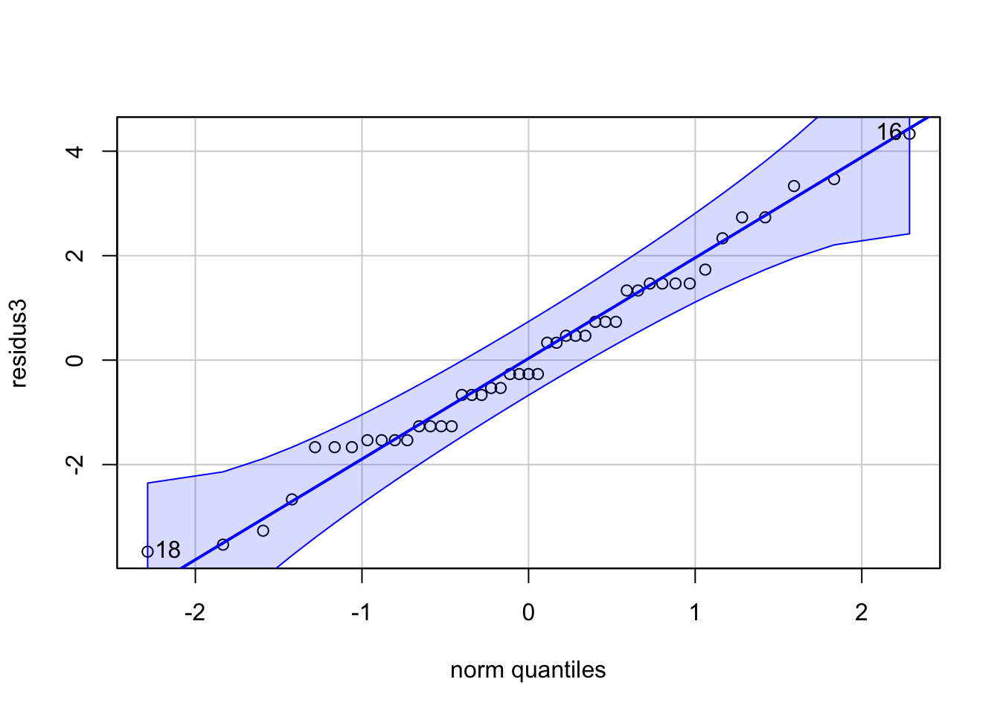
Version Author Date ef88e31 Huong PHAM 2026-03-08 [1] 16 18# Homoscédasticité = égalité des variances plot(residus3 ~ data_aov$Pression_arterielle, xlab = "Pression_arterielle (mmHg)", ylab = "Résidus")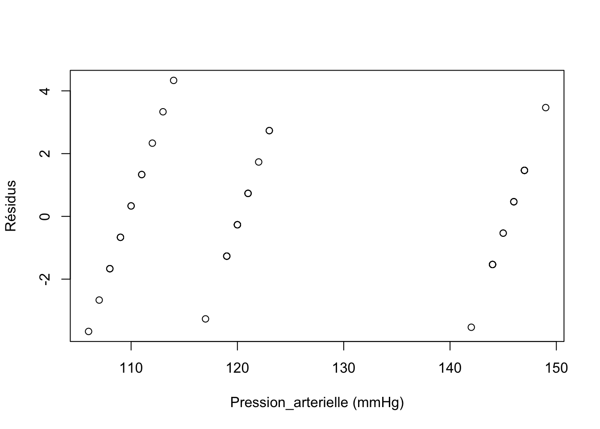
Version Author Date ef88e31 Huong PHAM 2026-03-08 plot(modele3)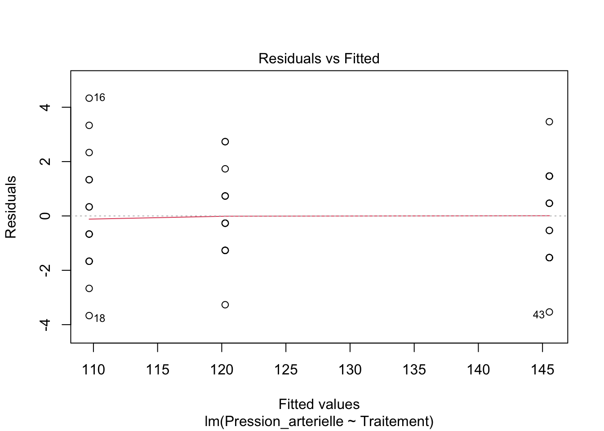
Version Author Date ef88e31 Huong PHAM 2026-03-08 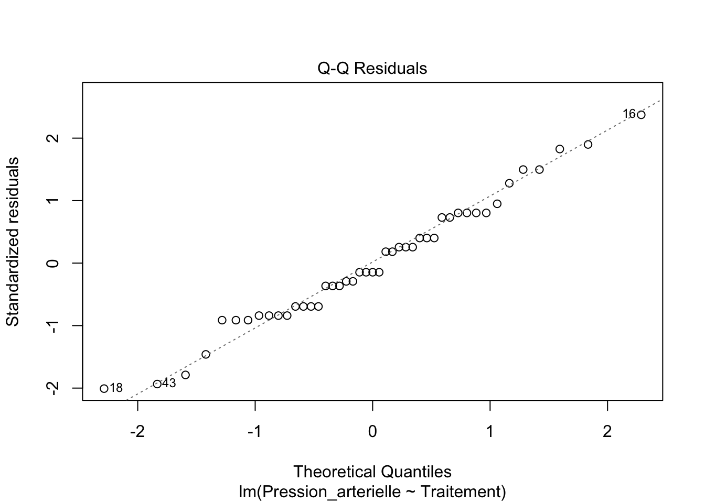
Version Author Date ef88e31 Huong PHAM 2026-03-08 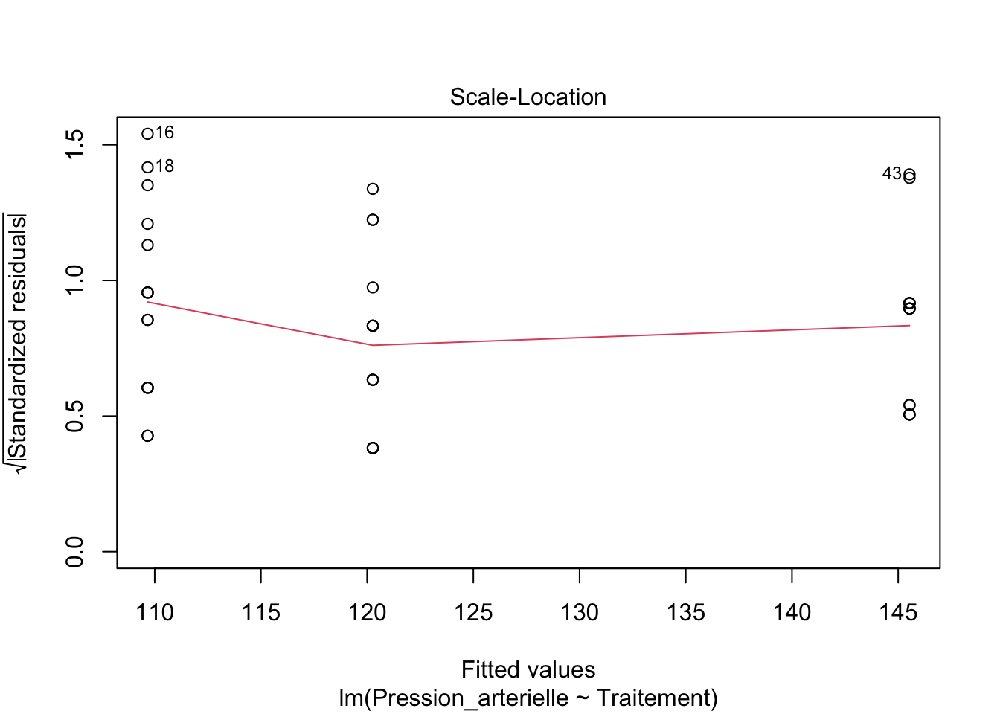
Version Author Date ef88e31 Huong PHAM 2026-03-08 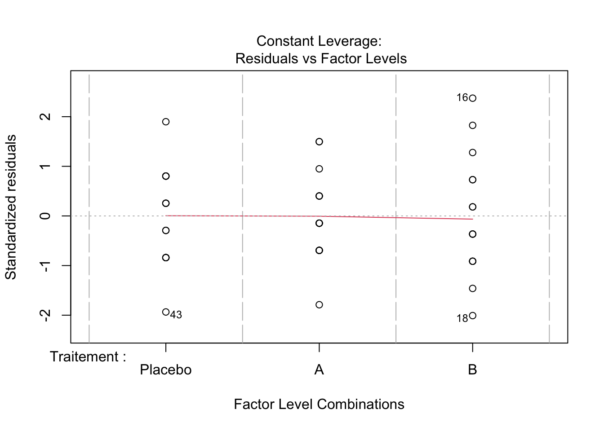
Version Author Date ef88e31 Huong PHAM 2026-03-08 Lecture clinique/statistique :
FR : Le groupe B obtient la pression la plus basse, puis A, puis placebo. Donc B semble le traitement le plus efficace.
VN : Nhóm B có huyết áp thấp nhất, sau đó là A, rồi placebo cao nhất. Do đó B có vẻ là điều trị hiệu quả nhất.Vérifiez les hypothèses sous-jacentes au modèle à partir des résidus.
Exercices supplémentaires
1 - Questions de cours
Concepts généraux
Quel est l’objectif principal de la régression linéaire simple ?
Dùng một biến định lượng X để mô tả, lượng hóa và dự đoán giá trị trung bình của một biến định lượng Y.
Vrai ou Faux : La régression linéaire simple permet d’expliquer une variable qualitative par une variable quantitative.
Faux. Régression linéaire simple cổ điển là cho Y định lượng, X thường là định lượng trong khuôn khổ bài này.
Quelle est la différence entre corrélation et régression ?
Corrélation đo force/direction của liên hệ tuyến tính; régression cho phương trình dự đoán và phân biệt rõ predictor với response.
Donnez un exemple de contexte où la régression linéaire simple est appropriée.
Ví dụ trong notebook: proportion de lipides → taux de cholestérol; taille → VEF; âge → temps de réaction.
Pourquoi ne pas se contenter du coefficient de corrélation pour prédire Y à partir de X ?
Vì r không cho slope, intercept, dự đoán, kiểm định tham số, hay phân tích residuals. Nói cách khác: corrélation chỉ báo “có dây”, régression mới nói dây kéo đi đâu và mạnh cỡ nào.
Définition du modèle
Écrivez l’équation d’un modèle linéaire simple.
Que représentent les paramètres β0 et β1 ?
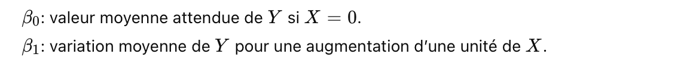
Que signifie le terme d’erreur ε dans le modèle ?
Phần sai số không giải thích được bởi đường hồi quy, gom ảnh hưởng của biến không đo, biến thiên sinh học, sai số đo lường, ngẫu nhiên.
Sous quelles conditions peut-on utiliser une régression linéaire simple ?
Khi có một predictor định lượng, một response định lượng, quan hệ trung bình gần tuyến tính, residuals độc lập, gần chuẩn và có phương sai xấp xỉ không đổi.
Vrai ou Faux : La variable explicative peut être qualitative dans un modèle linéaire simple.
Khi có một predictor định lượng, một response định lượng, quan hệ trung bình gần tuyến tính, residuals độc lập, gần chuẩn và có phương sai xấp xỉ không đổi.
Estimation et interprétation
Quelle méthode est utilisée pour estimer β0 et β1 ?
Méthode des moindres carrés ordinaires, tức chọn đường làm tổng bình phương residuals là nhỏ nhất.
Donnez la formule de l’estimateur de β1.
X tăng thì Y có xu hướng tăng trung bình.
Donnez la formule de l’estimateur de β0.
X tăng thì Y có xu hướng giảm trung bình.
Que représente un résidu dans le modèle ?
Giá trị trung bình dự đoán của Y khi X=0; chỉ có ý nghĩa thực tế nếu X=0 hợp lý trong bối cảnh dữ liệu.
Pourquoi minimise-t-on la somme des carrés des résidus ?
Kiểm định H0:β1=0, tức không có liên hệ tuyến tính giữa X và Y
Qualité et tests
Que mesure le coefficient de détermination R2 ?
Tỷ lệ biến thiên của Y được giải thích bởi mô hình.
Donnez la formule de R2.
Non. Mô hình giải thích tốt không đồng nghĩa quan hệ nhân quả. Hồi quy mô tả association trong dữ liệu quan sát hoặc thực nghiệm theo thiết kế có sẵn.
Quelle est la relation entre R2 et le coefficient de corrélation dans le cas simple ?
P-value nhỏ cho biết effect khó do ngẫu nhiên; importance pratique phụ thuộc cỡ slope và bối cảnh lâm sàng/khoa học.
Ví dụ r sel-PAS có ý nghĩa thống kê nhưng R2 chỉ 0.144, nên không nên thổi nó thành “mô hình tuyệt vời”.
Quel test permet d’évaluer la significativité globale du modèle ?
Residuals phân tán nhiều quanh đường hồi quy, nên dự đoán kém chính xác hơn.
Écrivez les hypothèses du test F global.
Trong hồi quy tuyến tính đơn:
H0: β1=0
Nghĩa là mô hình không giải thích được gì thêm so với mô hình chỉ có intercept, tức không có liên hệ tuyến tính giữa X và Y.H1: β1≠0
Nghĩa là có liên hệ tuyến tính giữa X và Y.
Nếu viết trong bối cảnh ANOVA hay hồi quy nhiều nhóm, dạng tổng quát hơn là:
H0: tất cả các hiệu ứng giải thích đều bằng 0
H1: ít nhất một hiệu ứng khác 0
Que conclure si Fobs > Fcritique ?
Nếu Fobs>Fcritique, ta rejette H0 ở mức ý nghĩa α.
Kết luận bằng lời:
Le modèle global est statistiquement significatif
Biến giải thích mang lại thông tin có ích để giải thích biến đáp ứng
Trong hồi quy đơn: có bằng chứng cho thấy β1≠0, tức là có liên hệ tuyến tính có ý nghĩa thống kê giữa X và Y
Hypothèses et diagnostics
Citez les hypothèses sur les résidus dans un modèle linéaire simple.
Linéarité de la moyenne, indépendance, normalité approximative, homoscédasticité.
Comment vérifier la normalité des résidus ?
QQ-plot là công cụ mạnh nhất; histogram residuals là bổ trợ.
Comment vérifier l’homoscédasticité ?
Residuals vs fitted hoặc residuals vs predictor, xem độ phân tán có gần như hằng định không.
Que faire en cas de non-linéarité ?
Cân nhắc transformation của Y hoặc X, hoặc thêm dạng phi tuyến. Notebook VEF đã chọn log-transform de la réponse.
Lien avec l’ANOVA
Quelle est la relation entre ANOVA et régression linéaire simple ?
Đều là trường hợp của mô hình tuyến tính; ANOVA là khi predictor là facteur.
Donnez la relation fondamentale entre SCtot, SCexp et SCres.
Pourquoi le test F est-il identique dans les deux approches ?
Vì hai cách tiếp cận dùng cùng decomposition của tổng biến thiên và cùng so sánh variance expliquée với variance résiduelle.
2 - Exercices R
Exercice 1 — Consommation de sel et pression artérielle systolique
Une étude explore la relation entre la consommation quotidienne de sel (en grammes par jour) et la pression artérielle systolique (en mmHg) chez des adultes. Les données proviennent d’un échantillon de 240 individus (fichier sel_tension.csv). Questions :
Importez les données et vérifiez la structure (noms des variables, type des colonnes). Mettez en forme les données si nécessaire. Indiquez s’il existe des valeurs manquantes.
## 1. Importation et mise en forme des données sel_tension <- read.csv(file = "/Volumes/ORICO/Modèle Linaire/TD régression linéaire simple-20260121/Exercices supplémentaires-20260308/sel_tension.csv", sep = ",", dec= ".", header = TRUE) str(sel_tension)'data.frame': 240 obs. of 2 variables: $ Sel_g_jour: num 7.8 9.8 4.4 6.3 7.7 13.4 11.5 7.5 9.9 8.5 ... $ PAS_mmHg : int 115 120 111 107 120 107 111 112 121 116 ...Réalisez des statistiques descriptives (moyenne, écart-type, minimum, maximum) pour chaque variable. Commentez ce que ces valeurs révèlent sur la population étudiée.
## 2. Statistiques descriptives ### Consommation de sel sel_tension %>% summarise( Moyenne_sel = mean(Sel_g_jour), SD_sel = sd(Sel_g_jour), Minimum_sel = min(Sel_g_jour), Maximum_sel = max(Sel_g_jour) )Moyenne_sel SD_sel Minimum_sel Maximum_sel 1 7.899167 2.369347 3 13.9### Pression artérielle systolique sel_tension %>% summarise( Moyenne_PAS = mean(PAS_mmHg), SD_PAS = sd(PAS_mmHg), Minimum_PAS = min(PAS_mmHg), Maximum_PAS = max(PAS_mmHg) )Moyenne_PAS SD_PAS Minimum_PAS Maximum_PAS 1 110.4417 8.369396 90 135Dữ liệu có 240 quan sát và 2 biến:
Sel_g_jourvàPAS_mmHg. Sel trung bình 7.90 g/ngày, SD 2.37, dao động từ 3 đến 13.9. Đây là cấu trúc chuẩn cho hồi quy đơn. Notebook không trích text về missing values saustr(), nên cách trả lời an toàn là: không thấy bằng chứng text của valeurs manquantes trong notebook; cần kiểm trực tiếp bằngsum(is.na(...))nếu muốn khẳng định tuyệt đối.Représentez la relation entre les deux variables à l’aide d’un graphique adapté. Décrivez la ten- dance observée.
## 3. Représentation graphique de la relation entre la consommation de sel et la pression artérielle plot(x = sel_tension$Sel_g_jour, y = sel_tension$PAS_mmHg, xlab = "consommation de sel (g/jour)", ylab = "Pression artérielle systolique (mmHg)")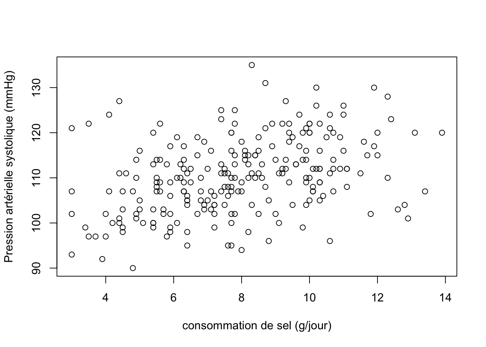
Version Author Date ef88e31 Huong PHAM 2026-03-08 Calculez un indicateur numérique qui mesure la force et la direction de la relation entre les deux variables. Interprétez sa valeur.
## 4. Calcul du coefficient de corrélation cor(sel_tension$Sel_g_jour, sel_tension$PAS_mmHg)[1] 0.379858VN:
Correlationr=0.3799cho thấy liên hệ dương mức vừa, không mạnh giữa lượng muối và PAS. Muối nhiều hơn đi kèm HA tâm thu cao hơn, nhưng mối liên hệ không chặt. Đây là kiểu kết quả hay bị sinh viên overclaim thành “giải thích tốt”, trong khi thật ra chỉ là tín hiệu có thật nhưng vừa phải.FR:
Le coefficientr=0.3799indique une association linéaire positive modérée entre la consommation de sel et la pression artérielle systolique. La relation existe, mais elle n’est pas très forte.Estimez un modèle permettant d’expliquer la pression artérielle en fonction de la consommation de sel.
## 5. Estimation d'une régression linéaire simple modele1 <- lm(PAS_mmHg ~ Sel_g_jour, data = sel_tension)Vérifiez si les hypothèses du modèle semblent respectées (normalité des résidus, homogénéité de la variance). Indiquez quels diagnostics vous utilisez et ce que vous constatez.
## 6. Vérification des hypothèses du modèle ### Homoscédasticité et linéarité de la fonction de régression plot(modele1, which = 1)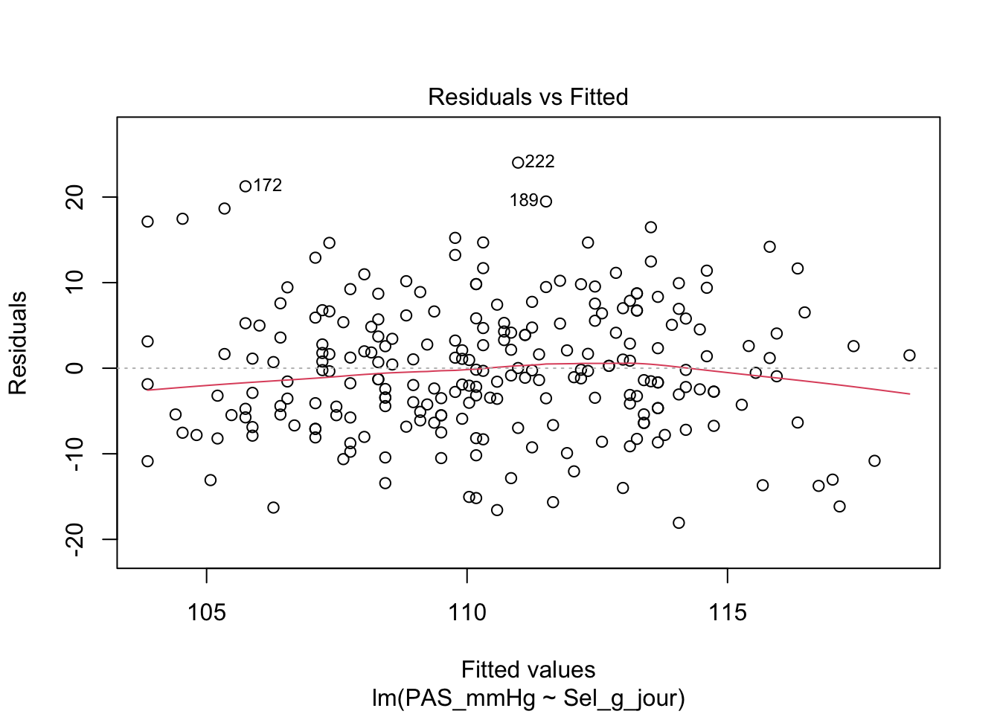
Version Author Date ef88e31 Huong PHAM 2026-03-08 ### Normalité plot(modele1, which = 2)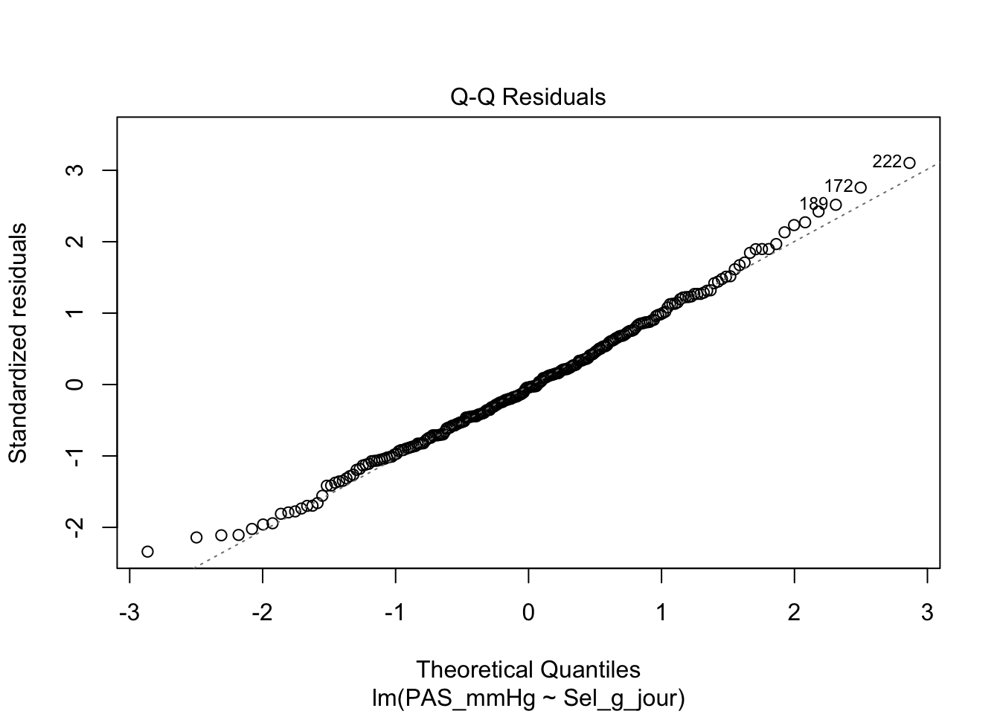
Version Author Date ef88e31 Huong PHAM 2026-03-08 Évaluez la capacité du modèle à expliquer la variabilité observée. Commentez la valeur obtenue.
## 7. Qualité du modèle : R2 summary(modele1)$r.squared[1] 0.1442921Testez si l’effet de la consommation de sel est statistiquement significatif. Expliquez votre conclu- sion, puis interprétez l’effet sur sel sur la pression artérielle systolique.
##. 8. Evaluation de la significativité de l'effet du sel sur la pression artérielle summary(modele1)Call: lm(formula = PAS_mmHg ~ Sel_g_jour, data = sel_tension) Residuals: Min 1Q Median 3Q Max -18.066 -5.433 -0.315 5.105 24.020 Coefficients: Estimate Std. Error t value Pr(>|t|) (Intercept) 99.8426 1.7464 57.169 < 2e-16 *** Sel_g_jour 1.3418 0.2118 6.335 1.18e-09 *** --- Signif. codes: 0 '***' 0.001 '**' 0.01 '*' 0.05 '.' 0.1 ' ' 1 Residual standard error: 7.758 on 238 degrees of freedom Multiple R-squared: 0.1443, Adjusted R-squared: 0.1407 F-statistic: 40.13 on 1 and 238 DF, p-value: 1.175e-09# p-valeur associé à la variable Sel < 0.05. Rejet de H0 qui stipule que le paramètre # de l'effet du sel est égal à 0. Le sel a donc un effet sginficiatif sur la pression artérielle. # Interprétation : beta = 1.3418, pour toute augmentation d'une gramme de la consommation de sel # la pression artérielle systolique augmente de 1.3418 mmHg.Modèle et significativité
Mỗi tăng 1 g muối/ngày làm PAS tăng trung bình khoảng 1.34 mmHg.
Slope rất có ý nghĩa thống kê (
t = 6.335,p = 1.18e-09), và test F toàn cục cũng có ý nghĩa.Nhưng R2=0.1443, nên mô hình chỉ giải thích khoảng 14.4% biến thiên của PAS.
Kết luận đúng là: effect có thật, nhưng khả năng giải thích còn hạn chế, còn nhiều yếu tố khác quyết định HA.
Fournissez des prédictions pour une consommation faible (par ex. 5 g/j) et élevée (par ex. 12 g/j). Interprétez ces résultats.
## 9. Prédiction Xpred <- data.frame(Sel_g_jour = c(5, 12)) predict(modele1, newdata = Xpred)1 2 106.5516 115.9442Notebook dự đoán:
5 g/jour → 106.55 mmHg
12 g/jour → 115.94 mmHg
Chênh khoảng 9.39 mmHg giữa hai mức tiêu thụ. Đây là cách đưa slope về lâm sàng/thực hành: không nói bằng “β1”, mà nói bằng khác biệt dự đoán giữa hai mức phơi nhiễm cụ thể.
Discutez l’effet du sel et les limites éventuelles de l’analyse.
Exercice 2 — Âge et temps de réaction
Une étude examine la relation entre l’âge (en années) et le temps de réaction (en millisecondes) lors d’une tâche cognitive. Les données concernent 300 participants âgés de 20 à 75 ans (fichier age_temps_reaction.csv). Questions :
Importez le jeu de données dans R et mettez-le en forme si nécessaire.
## 1. Importation et mise en forme des données age_temps_reaction <- read.csv(file = "/Volumes/ORICO/Modèle Linaire/TD régression linéaire simple-20260121/Exercices supplémentaires-20260308/age_temps_reaction.csv", sep = ",", dec= ".", header = TRUE) str(age_temps_reaction)'data.frame': 300 obs. of 2 variables: $ Age_annees : int 73 31 47 34 71 24 33 26 60 58 ... $ TempsReaction_ms: int 432 272 371 347 493 253 255 339 375 398 ...Calculez la moyenne et l’écart-type pour les deux variables. Que suggèrent-ils sur la variabilité des temps de réaction ?
## 2. Staistiques descriptives age_temps_reaction %>% summarise( Moyenne_age = mean(Age_annees), SD_age = sd(Age_annees) )Moyenne_age SD_age 1 48.49333 15.9616age_temps_reaction %>% summarise( Moyenne_age = mean(TempsReaction_ms), SD_age = sd(TempsReaction_ms) )Moyenne_age SD_age 1 366.7333 60.78755Descriptif
Dữ liệu có 300 participants. Tuổi trung bình 48.49 năm, SD 15.96; temps de réaction trung bình 366.73 ms, SD 60.79. Cấu trúc hoàn toàn phù hợp để làm hồi quy đơn âge → temps de réaction.
Représentez la relation entre l’âge et le temps de réaction à l’aide d’un graphique pertinent. La tendance semble-t-elle linéaire ? Justifiez votre réponse.
## 3. Représentztion graphique de la relation entre l'âge et le temps de réaction plot(x = age_temps_reaction$Age_annees, y = age_temps_reaction$TempsReaction_ms, xlab = "Âge (années)", ylab = "Temps de réaction (ms)")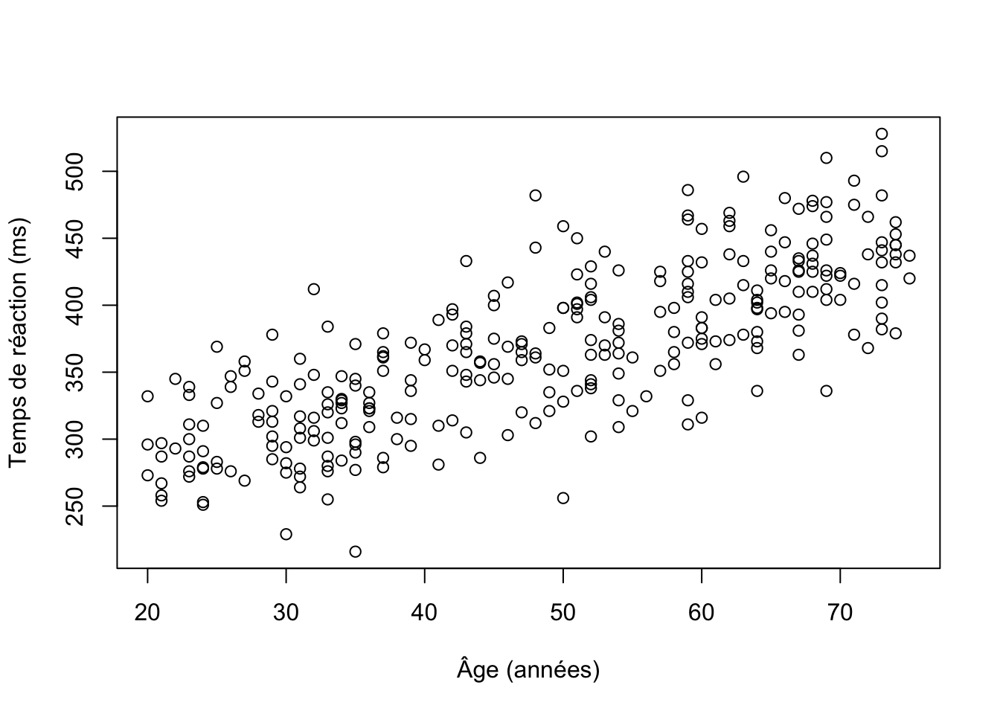
Version Author Date ef88e31 Huong PHAM 2026-03-08 Calculez un indicateur qui résume la force et la direction de la relation. Interprétez sa valeur.
## 4. Coefficient de corrélation cor(age_temps_reaction$Age_annees, age_temps_reaction$TempsReaction_ms)[1] 0.7725096Relation et corrélation
Correlation
r=0.7725cho thấy liên hệ dương khá mạnh: tuổi càng cao thì temps de réaction càng dài, tức phản ứng chậm hơn. Nếu thi, câu này nên nói bằng ngôn ngữ của outcome: “allongement du temps de réaction avec l’âge”.Ajustez un modèle pour étudier l’effet de l’âge sur le temps de réaction. Expliquez la signification des paramètres obtenus.
## 5. Estimation d'une régression linéaire simple modele2 <- lm(TempsReaction_ms ~ Age_annees, data = age_temps_reaction) summary(modele2)Call: lm(formula = TempsReaction_ms ~ Age_annees, data = age_temps_reaction) Residuals: Min 1Q Median 3Q Max -115.166 -25.053 -1.123 26.389 116.718 Coefficients: Estimate Std. Error t value Pr(>|t|) (Intercept) 224.0661 7.1508 31.33 <2e-16 *** Age_annees 2.9420 0.1401 21.00 <2e-16 *** --- Signif. codes: 0 '***' 0.001 '**' 0.01 '*' 0.05 '.' 0.1 ' ' 1 Residual standard error: 38.66 on 298 degrees of freedom Multiple R-squared: 0.5968, Adjusted R-squared: 0.5954 F-statistic: 441 on 1 and 298 DF, p-value: < 2.2e-16Évaluez la proportion de variabilité expliquée par l’âge. Quelle est la portée de ce résultat ?
## 6. Coefficient de détermination summary(modele2)$r.squared[1] 0.5967711Examinez les résidus pour juger de la validité des hypothèses (normalité, homogénéité). Si une hypothèse semble non respectée, proposez une amélioration possible et justifiez-la.
## 7. Vérification des hypothèses du modèle ### Homoscédasiticité et linéaire de la fonction de régression plot(modele2, which = 1)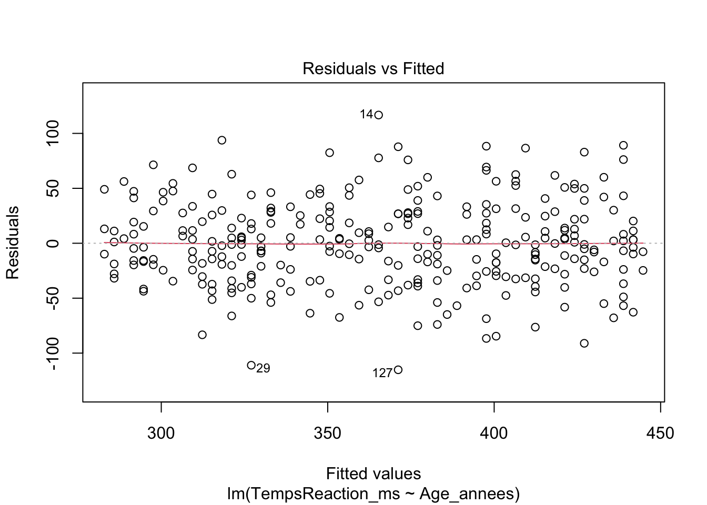
Version Author Date ef88e31 Huong PHAM 2026-03-08 ### Normalité plot(modele2, which = 2)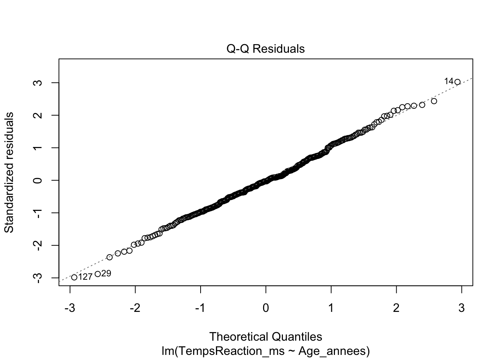
Version Author Date ef88e31 Huong PHAM 2026-03-08 Comparez les prédictions pour un âge jeune (par ex. 30 ans) et un âge avancé (par ex. 70 ans). Commentez la différence.
## 8. Calcul de prédictions Xpred <- data.frame(Age_annees = c(30, 70)) predict(modele2, newdata = Xpred)1 2 312.3260 430.0059Prédictions :
Notebook cho:
30 ans → 312.33 ms
70 ans → 430.01 ms
Chênh lệch khoảng 117.68 ms, khá lớn. Đây là cách rất đẹp để chuyển slope 2.94 ms/an thành thông điệp thực hành dễ hiểu hơn: qua 40 năm, thời gian phản ứng dự đoán tăng gần 118 ms.
Formulez une conclusion sur la relation âge–temps de réaction.
## 9. Interprétation de l'effet de l'âge summary(modele2)Call: lm(formula = TempsReaction_ms ~ Age_annees, data = age_temps_reaction) Residuals: Min 1Q Median 3Q Max -115.166 -25.053 -1.123 26.389 116.718 Coefficients: Estimate Std. Error t value Pr(>|t|) (Intercept) 224.0661 7.1508 31.33 <2e-16 *** Age_annees 2.9420 0.1401 21.00 <2e-16 *** --- Signif. codes: 0 '***' 0.001 '**' 0.01 '*' 0.05 '.' 0.1 ' ' 1 Residual standard error: 38.66 on 298 degrees of freedom Multiple R-squared: 0.5968, Adjusted R-squared: 0.5954 F-statistic: 441 on 1 and 298 DF, p-value: < 2.2e-16# L'effet de l'âge est significativement différent de 0 puisque la p-valeur < 0.05. # beta_age = 2.9420, ce qui signifie que pour toute augmentation de l'âge d'une année, le temps # de réaction augemente de 2.9420 ms.Modèle estimé:
Mỗi tăng 1 tuổi làm temps de réaction tăng trung bình khoảng 2.94 ms.
Slope có ý nghĩa rất mạnh (
t = 21.00,p < 2e-16). R2=0.5968, nghĩa là tuổi giải thích khoảng 59.7% biến thiên của thời gian phản ứng.Đây là mức khá tốt nhưng chưa hoàn hảo, tức còn nhiều yếu tố khác ảnh hưởng.
Interpretation en français :)
La régression linéaire simple étudie le lien entre une variable explicative quantitative et une variable réponse quantitative.
Le coefficient de pente représente la variation moyenne de Y pour une augmentation d’une unité de X.
Une p-valeur faible pour β1 indique une association linéaire statistiquement significative entre X et Y.
Le R2 correspond à la proportion de variabilité de Y expliquée par le modèle.
La corrélation mesure l’intensité du lien, tandis que la régression fournit une équation de prédiction.
Les hypothèses principales sont la linéarité, l’indépendance, la normalité des résidus et l’homoscédasticité.
Le QQ-plot est un outil central pour apprécier la normalité des résidus.
Un graphique résidus-valeurs ajustées aide à détecter une non-linéarité ou une hétéroscédasticité.
En cas de violation des hypothèses, une transformation de la variable réponse peut améliorer le modèle.
L’ANOVA à un facteur est un cas particulier du modèle linéaire avec variable explicative qualitative.
sessionInfo()R version 4.4.2 (2024-10-31)
Platform: aarch64-apple-darwin20
Running under: macOS Ventura 13.6.3
Matrix products: default
BLAS: /Library/Frameworks/R.framework/Versions/4.4-arm64/Resources/lib/libRblas.0.dylib
LAPACK: /Library/Frameworks/R.framework/Versions/4.4-arm64/Resources/lib/libRlapack.dylib; LAPACK version 3.12.0
locale:
[1] en_US.UTF-8/en_US.UTF-8/en_US.UTF-8/C/en_US.UTF-8/en_US.UTF-8
time zone: Europe/Paris
tzcode source: internal
attached base packages:
[1] stats graphics grDevices utils datasets methods base
other attached packages:
[1] emmeans_2.0.1 multcomp_1.4-29 TH.data_1.1-5 MASS_7.3-65
[5] survival_3.8-6 mvtnorm_1.3-3 rstatix_0.7.3 lubridate_1.9.5
[9] forcats_1.0.1 stringr_1.6.0 dplyr_1.2.0 purrr_1.2.1
[13] readr_2.1.6 tidyr_1.3.2 tibble_3.3.1 ggplot2_4.0.2
[17] tidyverse_2.0.0 car_3.1-5 carData_3.0-6
loaded via a namespace (and not attached):
[1] gtable_0.3.6 xfun_0.56 bslib_0.10.0 lattice_0.22-9
[5] tzdb_0.5.0 vctrs_0.7.1 tools_4.4.2 generics_0.1.4
[9] sandwich_3.1-1 pkgconfig_2.0.3 Matrix_1.7-4 RColorBrewer_1.1-3
[13] S7_0.2.1 lifecycle_1.0.5 compiler_4.4.2 farver_2.1.2
[17] git2r_0.36.2 codetools_0.2-20 httpuv_1.6.16 htmltools_0.5.9
[21] sass_0.4.10 yaml_2.3.12 Formula_1.2-5 later_1.4.6
[25] pillar_1.11.1 jquerylib_0.1.4 whisker_0.4.1 cachem_1.1.0
[29] abind_1.4-8 tidyselect_1.2.1 digest_0.6.39 stringi_1.8.7
[33] splines_4.4.2 rprojroot_2.1.1 fastmap_1.2.0 grid_4.4.2
[37] cli_3.6.5 magrittr_2.0.4 utf8_1.2.6 broom_1.0.12
[41] withr_3.0.2 scales_1.4.0 promises_1.5.0 backports_1.5.0
[45] estimability_1.5.1 timechange_0.4.0 rmarkdown_2.30 otel_0.2.0
[49] workflowr_1.7.2 zoo_1.8-15 hms_1.1.4 coda_0.19-4.1
[53] evaluate_1.0.5 knitr_1.51 rlang_1.1.7 Rcpp_1.1.1
[57] glue_1.8.0 rstudioapi_0.18.0 jsonlite_2.0.0 R6_2.6.1
[61] fs_1.6.6